2 Estado del arte, hipótesis y objetivos
| Sección | Lectura | Estudio |
|---|---|---|
| Cómo se ha construido este capítulo | 3 min | 5 min |
| La esclerosis múltiple como trastorno de red | 4 min | 5 min |
| Alteraciones espectrales en EM | 5 min | 5 min |
| Conectividad funcional EEG y MEG en EM | 6 min | 10 min |
| Métricas utilizadas y conducción de volumen | 18 min | 40 min |
| Hallazgos por banda | 3 min | 5 min |
| Relación con las variables clínicas | 2 min | 5 min |
| Estudios longitudinales y reproducibilidad | 3 min | 5 min |
| Limitaciones y heterogeneidad de la literatura | 3 min | 5 min |
| El antecedente más cercano | 3 min | 5 min |
| Tabla resumen de la evidencia | 4 min | 5 min |
| Hueco de investigación y posicionamiento de NeuroMIND | 3 min | 5 min |
| Hipótesis | 8 min | 10 min |
| Objetivos | 1 min | 5 min |
| Síntesis y preguntas para discutir | 3 min | 15 min |
| Fichas de la matriz de evidencia | 27 min | 30 min |
| Dudas del proyecto | 5 min | 5 min |
| Capítulo completo | 1 h 38 min | 2 h 10 min |
Objetivos de aprendizaje
Objetivo del capítulo. La literatura de EEG y MEG de reposo en esclerosis múltiple apunta a una reorganización dependiente de la banda (alfa y theta, sobre todo), pero con muestras pequeñas, métricas heterogéneas y casi sin seguimiento: de ese hueco salen las hipótesis de NeuroMIND.
La pregunta científica. Si la desmielinización cambia los retardos de conducción y, con ellos, la relación de fase entre regiones (capítulo 1), ¿qué ha medido ya la literatura de EEG y MEG de reposo en esclerosis múltiple, con qué métricas y con qué limitaciones, y qué queda por estudiar con el wPLI en EEG de sensores?
Al terminar este capítulo deberías ser capaz de:
- explicar por qué el wPLI no da peso a la sincronía instantánea (la que produce la conducción de volumen) y qué se pierde con ello, en particular para desfases próximos a 0° o 180°;
- leer la tabla de hallazgos por banda sin confundir «más» o «menos» conectividad con «mejor» o «peor» (compensación frente a colapso);
- distinguir lo publicado (evidencia previa) de las hipótesis del proyecto, y reconocer cuáles se formularon después de ver los resultados de la cohorte;
- valorar las limitaciones de la literatura: muestras pequeñas, cohortes reutilizadas, métricas no comparables y condición de registro;
- enunciar el hueco de investigación y cómo H1–H5 y los objetivos salen de él.
Conocimientos previos. El capítulo 1 (retardo de conducción y desfase), la idea de espectro de potencia y de bandas de frecuencia, y números complejos básicos. Las cajas «Para clínicos» explican el lado de la señal y la estadística. Las referencias a capítulos del informe que aún no están en el libro son textuales («cap. N del informe original»); la del capítulo 1 lleva enlace.
Una simulación docente acompaña al capítulo: la Sección 2.5.2 compara PLI, wPLI y coherencia con épocas sintéticas (datos sintéticos, sin datos EEG).
Qué no es. No es una revisión sistemática ni un metaanálisis (el propio capítulo lo advierte en la Sección 2.1), ni una revisión bibliográfica nueva: se migra el contenido del informe. Las cifras de cada estudio son las que recoge el informe; este libro las transcribe fielmente pero no las ha contrastado con los artículos originales (véase la Sección 2.16).
Lecturas esenciales
Tres lecturas, de mayor a menor prioridad. La dificultad para ingeniería (de uno a tres, de menor a mayor) y los tiempos son los que da el informe original y son orientativos.
Pasa el cursor (o toca) sobre la cita para ver la referencia completa. Los tres niveles son los del informe: imprescindible, para profundizar y consulta.
Imprescindible
Shirani y Mohebbi (2022) · «Brain functional connectivity analysis in patients with relapsing-remitting multiple sclerosis: a graph theory approach of EEG resting state» (artículo, Frontiers in Neuroscience).
El diseño de registro más parecido: EEG de reposo con ojos cerrados, en sensores, EM remitente-recurrente frente a controles, y una métrica de fase robusta (coherencia imaginaria).
Leer: métodos (montaje, ICA y coherencia imaginaria) y resultados de red.
- Tiempo ≈ 1,5 h
- Dificultad 2
- Sección Sección 2.10
- DOI 10.3389/fnins.2022.801774
Para profundizar
Tewarie et al. (2013) · «Cognitive and clinical dysfunction, altered MEG resting-state networks and thalamic atrophy in multiple sclerosis» (artículo, PLoS ONE).
El patrón por banda con el estimador más cercano al wPLI: PLI con ojos cerrados, menos conectividad en alfa alta y más en beta, medido con MEG en fuentes.
Leer: métodos (PLI y redes de reposo) y resultados globales.
- Tiempo ≈ 1,5 h
- Dificultad 2
- Sección Sección 2.4
- DOI 10.1371/journal.pone.0069318
Consulta
Hardmeier et al. (2014) · «Reproducibility of functional connectivity and graph measures based on the phase lag index (PLI) and weighted phase lag index (wPLI) derived from high resolution EEG» (artículo, PLoS ONE).
Fiabilidad test-retest del PLI y el wPLI en EEG de reposo de sanos, a uno y dos años: el techo de lo que un contraste T1–T2 puede distinguir del ruido.
- Tiempo ≈ 1 h
- Dificultad 2
- Sección Sección 2.8
- DOI 10.1371/journal.pone.0108648
Genealogía de las ideas. Cuatro hitos de la literatura que recorre este capítulo:
- 2000 · coherencia EEG en EM (Leocani 2000).
- 2013 · PLI en fuentes, con ojos cerrados (Tewarie et al. 2013).
- 2022 · EEG en sensores, con ojos cerrados (Shirani y Mohebbi 2022).
- 2026 · fase y cognición, con EEG (Elkholy et al. 2026).
Este capítulo analiza el estado del arte. Los demás documentan qué hace el pipeline; este recoge lo que otros grupos han publicado sobre EEG y MEG de reposo en esclerosis múltiple, para decidir qué preguntas le quedan por contestar a NeuroMIND. Lo que aquí se afirma es evidencia previa: está en los artículos, con sus cifras. Las hipótesis propias solo aparecen en Sección 2.13, separadas y con su estado.
La literatura de EEG y MEG de reposo en EM coincide en que la enfermedad reorganiza la sincronía entre regiones de forma dependiente de la banda: la conectividad en alfa (sobre todo alfa alta) tiende a bajar y la de beta a subir, mientras theta aparece alterada en las dos direcciones según el estudio. Pero son muestras de 20–35 pacientes, con métricas casi nunca comparables y sin ningún seguimiento natural con EEG: ese es el hueco.
2.1 Cómo se ha construido este capítulo
Fuentes. Tres bases, en este orden, una verificación por DOI y una comprobación posterior en PubMed.
- Búsqueda dirigida en Europe PMC (6 de octubre de 2026), con seis cadenas que combinan multiple sclerosis con: EEG o MEG y functional connectivity, phase lag, coherence, network o synchronization en reposo (44 resultados); potencia espectral, lentificación o EEG cuantitativo (36); PLI, wPLI, PLV o coherencia imaginaria (13); fatiga (16); seguimiento, test-retest o reproducibilidad (16); y revisiones (31). Se añadieron por autor los grupos de Ámsterdam (Schoonheim, Tewarie), Bruselas (Van Schependom), Roma (Tecchio) y Sevilla (Vázquez-Marrufo, Galvao-Carmona).
- Búsqueda en Scopus (7 de octubre de 2026), con 11 cadenas restringidas a lo publicado desde 2023: núcleo (PLI, wPLI, PLV o coherencia imaginaria en EM), conectividad, espectro y alfa, grafos, fatiga y cognición, longitudinal y fiabilidad, condición de ojos cerrados y abiertos, biomarcadores, citas a Vinck et al. (2011), metodología y grupos de investigación. Nueve cadenas dieron resultados: 111 DOI únicos, cribados uno a uno en
docs/estado_arte/cribado_scopus_2026-10-07.csv(19 para leer, 18 de contexto, 62 descartados y 13 ya incluidos). La cadena del núcleo devolvió un único artículo, y es de TMS-EEG sin ninguna métrica de fase (Leodori, Mancuso, et al. 2026): un falso positivo (Sección 2.12). - Verificación. Las 56 referencias nuevas de este capítulo se comprobaron por DOI en Crossref antes de entrar en
bib/references.bib. Las tres de la comprobación en PubMed (8 de octubre de 2026) se comprobaron por DOI en Crossref. - Comprobación en PubMed (8 de octubre de 2026). La cadena
"weighted phase lag index"[Title/Abstract] AND "multiple sclerosis"[Title/Abstract], del 1 de enero de 2015 al 8 de octubre de 2026, devuelve un único registro: Tramonti et al. (2019), ya leído. El cribado del resto de esa sesión está endocs/estado_arte/bibliografia_priorizada.csv. No sustituye a Web of Science.
Criterios. Entra en la matriz de evidencia todo estudio de EEG o MEG de reposo en EM que compare con controles o con una variable clínica. Se priorizan el EEG (es nuestra modalidad), las métricas de fase y lo publicado desde 2018. Los estudios con tarea entran solo si son del grupo o si aportan algo que el reposo no cubre. La neuroimagen por resonancia funcional se usa como marco, no como evidencia directa.
Nivel de lectura. Cada ficha (Sección 2.16) lleva su estado: confirmado si se leyó el texto completo (19 fichas, de los PDF del grupo o del texto abierto de Europe PMC), provisional si solo se pudo leer el resumen (7 fichas, más la del análisis del propio grupo, que no está publicado) y pendiente si no hay acceso. Las cifras de una ficha provisional son las del resumen; lo que el resumen no dice consta como «no consta», no se completa.
Búsqueda estructurada, no metaanálisis. La revisión está hecha: la biblioteca del grupo, Europe PMC, Scopus y una comprobación en PubMed, con los 111 registros de Scopus cribados uno a uno y cada decisión documentada, y con texto completo en 19 de las 27 fichas. Le falta lo que exige una revisión sistemática formal: un segundo revisor y un protocolo PRISMA registrado. Sirve para situar el proyecto y derivar hipótesis, no para estimar tamaños de efecto agregados. La originalidad del wPLI está comprobada en Scopus y en PubMed (Sección 2.12); Web of Science la completaría.
2.2 La esclerosis múltiple como trastorno de red
Fuentes de la sección: Tahedl et al. (2018); Fleischer et al. (2019); Chard et al. (2021); Schoonheim et al. (2022)
Las lesiones de la EM están dispersas y varían mucho de un paciente a otro; por eso cuesta relacionarlas con los síntomas una a una, y por eso el campo ha pasado a estudiarlas como un daño a la red. La revisión de Tahedl et al. (2018), centrada sobre todo en resonancia funcional, resume cuatro observaciones repetidas: alteración de la conectividad en la sustancia gris profunda, pérdida de modularidad, asimetrías entre hemisferios y correspondencia entre síntomas y redes concretas. Propone, además, llevar estos análisis a estudios longitudinales.
Fleischer et al. (2019) ordenan los hallazgos de grafos en dos familias que coexisten: la desconexión o disrupción (pérdida de eficiencia, de hubs) y la adaptación o compensación (aumentos de conectividad que se interpretan como reclutamiento). La revisión del grupo MAGNIMS (Chard et al. 2021) añade que, en los primeros estudios longitudinales, estos cambios evolucionan en vez de limitarse a crecer, y que la conectividad sube o baja según el hub (tálamo, red neuronal por defecto). Schoonheim et al. (2022) lo integran en la hipótesis del colapso de red: la red se va desconectando y, pasado un umbral de pérdida de eficiencia, sus hubs quedan rígidos y sobrecargados, y la progresión clínica y cognitiva se acelera (véase también Schoonheim et al. 2015; Rocca et al. 2012). Stam (2024) generaliza el mecanismo a otras enfermedades neurológicas (epilepsia, ictus, alzhéimer): una lesión en cualquier punto redistribuye el tráfico de la red hacia los hubs, que se sobrecargan (más actividad y más conectividad) y acaban fallando en cascada. Para la EM subraya que la conectividad estructural siempre baja, mientras que la funcional puede subir o bajar según la fase; y que los primeros estudios de MEG, hechos en sensores, no corregían la dispersión del campo.
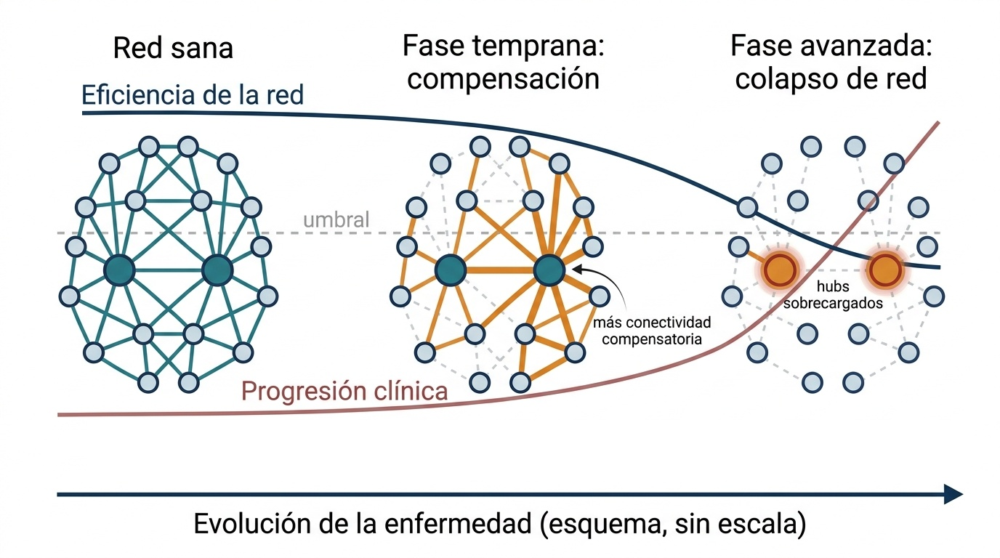
Procedencia y limitaciones de esta imagen
Procedencia. Ilustración conceptual generada con FigureLabs (IA generativa) el 6 de octubre de 2026 a partir de una descripción sin datos del estudio. Se conserva tal como se generó, salvo la corrección manual indicada. No se envió ningún dato del estudio. Fuente: ficha de procedencia del informe original.
Corrección manual. Se borraron los rótulos de las tres fases, que aparecían duplicados encima del eje temporal, y la punta de flecha que la curva «Eficiencia de la red» tenía a la izquierda (sugería tiempo invertido).
Limitaciones documentadas. Las curvas de eficiencia y de progresión clínica son cualitativas y no tienen unidades; el número de nodos y aristas es arbitrario; la posición del cruce con el «umbral» es ilustrativa, y la literatura no la fija en una fase concreta. Es una hipótesis teórica, no un hallazgo establecido.
Licencia. Los términos de uso y los derechos de distribución de la imagen no están documentados en el informe: pendiente
La figura 2.1 resume este marco, que conviene tener presente al leer el signo de cualquier diferencia de conectividad.
Un aumento de conectividad en un paciente no es, por sí mismo, «bueno» ni «malo». En fases tempranas puede reflejar que otras regiones suplen a las dañadas; en fases avanzadas, que la red ha perdido flexibilidad. Sin la fase clínica ni la carga lesional del paciente, el signo del cambio no basta para interpretarlo.
Este marco viene casi entero de la resonancia. La revisión sistemática de MEG de Khan et al. (2021) reúne 30 estudios de 13 centros, con al menos 433 pacientes y 347 controles, de calidad moderada, y concluye que la conectividad está reducida en varios paradigmas y que la conectividad en alfa alta se asocia a la cognición, pero que la dirección de los cambios en reposo «no está clara» por la heterogeneidad de métodos y de pacientes. Con EEG la literatura es todavía más escasa (Hernandez et al. 2023; Cruciani et al. 2024).
2.3 Alteraciones espectrales en EM
Fuentes de la sección: Leocani (2000); Keune et al. (2017); Schoonhoven et al. (2019); Van Schependom et al. (2021); Babiloni et al. (2016)
La potencia por banda es la métrica más sencilla de reposo y la primera que se estudió. La idea dominante es la lentificación: la actividad se desplaza hacia frecuencias más bajas, y ese desplazamiento sigue al daño estructural y a la cognición más que al diagnóstico.
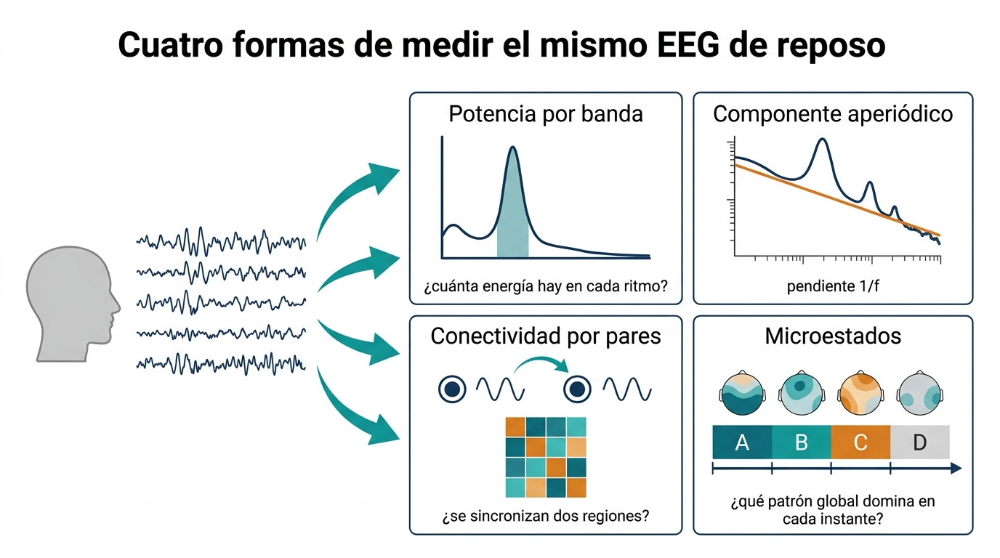
Procedencia y limitaciones de esta imagen
Procedencia. Ilustración conceptual generada con FigureLabs (IA generativa) el 6 de octubre de 2026 a partir de una descripción sin datos del estudio. Se conserva tal como se generó. No se envió ningún dato del estudio. Fuente: ficha de procedencia del informe original.
Limitaciones documentadas. La matriz de conectividad dibujada no es simétrica (una matriz wPLI sí lo es); el espectro del panel «Componente aperiódico» es otro que el del panel de potencia; las cuatro topografías de microestados son decorativas, no las clases canónicas A–D; la flecha entre los dos electrodos sugiere dirección, que el wPLI no mide.
Licencia. Los términos de uso y los derechos de distribución de la imagen no están documentados en el informe: pendiente
La figura 2.2 ordena esas cuatro miradas, que la literatura mezcla a menudo.
- Theta. Leocani (2000) describen más potencia theta frontotemporal-central en 28 pacientes que en 22 controles (p<0{,}005). Con MEG, Schoonhoven et al. (2019) (83 EM y 34 controles, ojos cerrados) asocian más theta y más alfa baja a peor cognición. Benelli et al. (2026) encuentran más theta frontocentral, con ojos abiertos, en los pacientes con fatiga.
- Alfa. Aquí la dirección depende de la sub-banda. Más potencia en alfa baja (8–10 Hz) acompaña a más atrofia y carga lesional (Van Schependom et al. 2021) y a peor cognición (Schoonhoven et al. 2019); menos alfa alta (10–12 Hz) se asocia a menor velocidad de procesamiento (De Cock et al. 2023). En EEG, Keune et al. (2017) relacionan más alfa-1 y alfa-2 global con un peor SDMT, y Shirani y Mohebbi (2022) miden un pico alfa menor en 20 pacientes que en 18 controles (p=0{,}041). Los pacientes con deterioro cognitivo tienen además un pico alfa más lento (Schoonhoven et al. 2019), más theta frontal y talámica y menos alfa-2 occipital (Simon et al. 2023). El estudio de EEG más grande con las dos sub-bandas separadas (64 pacientes y 46 controles, 128 canales, ojos cerrados) solo encuentra diferencia de grupo en alfa-2, menor en EM (p_{\text{FDR}}=0{,}037, d=0{,}52), y ninguna en alfa-1 (Anagnostopoulou et al. 2026).
- Un mecanismo para la lentificación. Con MEG, tractografía y un modelo de cerebro completo, Mazzara et al. (2025) estiman, paciente a paciente, cuánto alargan las lesiones el retardo de conducción de cada tracto. Ese peso de las lesiones se correlaciona con la potencia alfa (r=-0{,}83), mientras que la carga lesional total no lo hace con el pico alfa (r=0{,}00): importa qué tractos están dañados, no cuánto volumen de lesión hay.
- Beta y gamma. Lüttjohann et al. (2026) (51 EM frente a 51 controles) encuentran más potencia beta baja y alta en parte de los electrodos, ligada al grosor de la capa de fibras de la retina y a los potenciales evocados. Shirani y Mohebbi (2022) observan una tendencia a más gamma (p=0{,}050).
- Fenotipos. El resumen de Babiloni et al. (2016) (36 EMRR, 23 secundarias progresivas y 41 controles; ojos cerrados; fuentes LORETA) describe ritmos delta y alfa anómalos en ambos fenotipos, y más amplitud delta en regiones centrales, parietales y límbicas en la forma secundaria progresiva que en la remitente. provisional No es conectividad, y el texto completo no se ha leído.
- Componente aperiódico. La pendiente 1/f del espectro es más empinada en pacientes con deterioro cognitivo y con benzodiacepinas (Akbarian et al. 2023); un exponente frontal más bajo se asocia a fatiga cognitiva en EM y en COVID persistente (Linnhoff et al. 2026). Es un confusor directo de la potencia por banda [cap. 12 del informe original; Donoghue et al. (2020)].
En la lista anterior, «alfa alta» se define como 10–12 Hz en la viñeta sobre alfa; en la figura 2.3 y en la tabla 2.4 se define como 10–13 Hz, y la banda ALPHA única de NeuroMIND es 7,8–11,7 Hz. El informe no explica la diferencia (12 frente a 13 Hz). Se conservan los dos textos tal como están, porque cada estudio define sus sub-bandas a su manera (véase la Sección 2.9), pero no deben compararse como si fueran la misma banda. pendiente
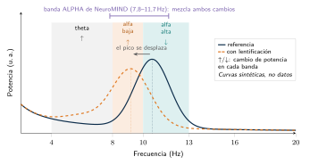
La figura 2.3 explica la aparente contradicción entre los estudios que ven más alfa y los que ven menos.
Las diferencias de grupo en potencia global son débiles o nulas: Van Schependom et al. (2021) no las encuentran con 67 pacientes y 47 controles, y el análisis espectral del propio grupo sobre la cohorte MINDEM tampoco (Sección 2.10). Lo que aparece es su relación con la clínica. La excepción es alfa-2 cuando se mide aparte (Anagnostopoulou et al. 2026): es el argumento más directo para separar alfa baja y alfa alta también en NeuroMIND.
Bloque espectral. Métodos dominantes: potencia absoluta o relativa por banda y frecuencia del pico, en MEG de fuentes o en EEG de sensores. Limitaciones repetidas: bandas alfa definidas de forma distinta (una sola banda de 8–13 Hz frente a alfa baja y alfa alta) y sin separar el componente aperiódico. Resuelto: la lentificación sigue al daño estructural y a la cognición. Abierto: si la diferencia entre EM y control existe a nivel global o solo en subgrupos con más carga.
2.4 Conectividad funcional EEG y MEG en EM
Fuentes de la sección: Tewarie et al. (2013); Shirani y Mohebbi (2022); Elkholy et al. (2026); Jouzizadeh et al. (2021)
El mecanismo que motiva medir conectividad está en el cap. 1: si la desmielinización cambia el retardo de conducción entre dos regiones, cambia también la relación de fase entre sus oscilaciones. Que las lesiones alargan los retardos ya se ha estimado en pacientes, aunque sobre el espectro y no sobre la fase (Mazzara et al. 2025). La literatura se agrupa en tres familias, según el registro y el espacio de análisis.
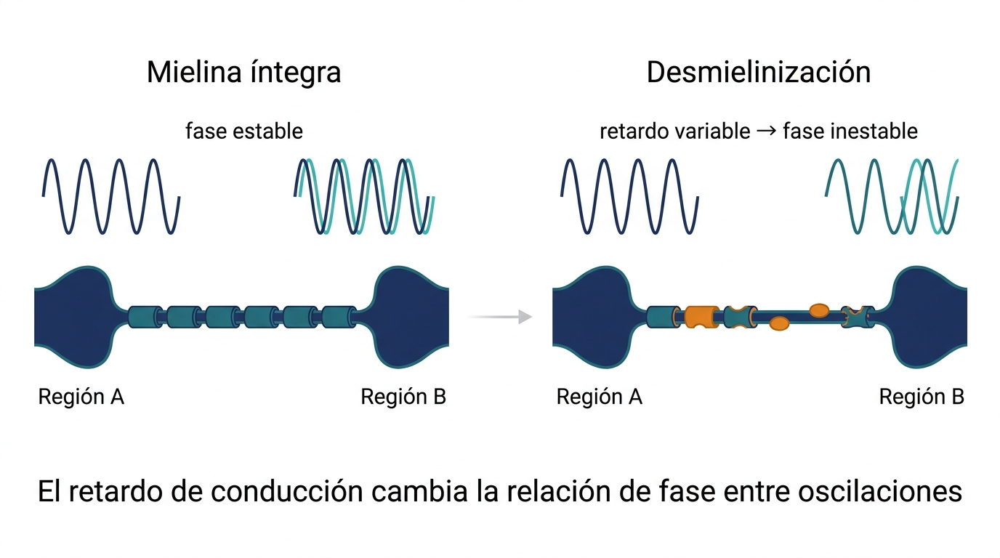
Procedencia y limitaciones de esta imagen
Procedencia. Ilustración conceptual generada con FigureLabs (IA generativa) el 6 de octubre de 2026 a partir de una descripción sin datos del estudio. Se conserva tal como se generó. No se envió ningún dato del estudio. Fuente: ficha de procedencia del informe original.
Limitaciones documentadas. Las oscilaciones no están a escala ni representan una frecuencia concreta; el par superpuesto sobre la «Región B» representa A (azul marino) frente a B (turquesa), pero la figura no lo rotula; la mielina dañada y la lesión son esquemáticas (no hay escala anatómica). La frase inferior repite la idea del pie.
Licencia. Los términos de uso y los derechos de distribución de la imagen no están documentados en el informe: pendiente
La figura 2.4 resume esa hipótesis mecanicista. Las tres familias se distinguen en la figura 2.5.
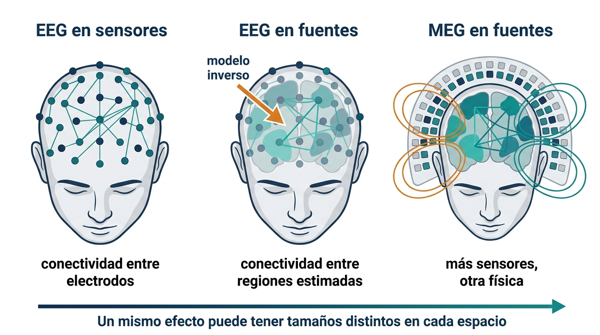
Procedencia y limitaciones de esta imagen
Procedencia. Ilustración conceptual generada con FigureLabs (IA generativa) el 6 de octubre de 2026 a partir de una descripción sin datos del estudio. Se conserva tal como se generó. No se envió ningún dato del estudio. Fuente: ficha de procedencia del informe original.
Limitaciones documentadas. Las cabezas se dibujan de frente y los electrodos parecen apoyados sobre la frente; el número de electrodos y de sensores MEG es arbitrario (no 31 canales ni 306 sensores); las «regiones estimadas» son manchas esquemáticas, no un atlas real; las líneas del campo magnético son decorativas.
Licencia. Los términos de uso y los derechos de distribución de la imagen no están documentados en el informe: pendiente
2.4.1 EEG en sensores
Es la familia más próxima a NeuroMIND.
- El antecedente clásico es Leocani (2000): 20 electrodos y 10 minutos de reposo en 28 pacientes y 22 controles. La coherencia theta entre áreas homólogas es menor (p<0{,}02) y la coherencia alfa, local y de larga distancia, mucho menor (p<0{,}0005), sobre todo con carga lesional subcortical alta o con afectación cognitiva.
- Shirani y Mohebbi (2022) registran 32 canales con ojos cerrados en 20 pacientes remitente-recurrentes (EDSS 3–4) y 18 controles. Con la coherencia imaginaria encuentran más eficiencia global (p=0{,}044) y más transitividad (p=0{,}027) en EM, también en delta, theta y beta; con la función de transferencia dirigida, un diámetro de red mayor en alfa (p=0{,}037). Ningún p está corregido por comparaciones múltiples.
- Elkholy et al. (2026) comparan 35 pacientes y 35 controles con 19 canales, referencia de orejas y 2 minutos de épocas limpias (la condición no consta). Miden la coherencia y el «retardo de fase», que es el ángulo de la coherencia en grados, no el PLI ni el wPLI. La coherencia alfa entre temporales (p=0{,}001) y entre parietales (p=0{,}005) es menor en EM; el ángulo beta fronto-temporal izquierdo es mayor (p=0{,}002) y se correlaciona con el PASAT (r=-0{,}626). Los p no están corregidos, y los propios autores reconocen que sus métricas son sensibles a la conducción de volumen y recomiendan el wPLI.
- Buyukturkoglu et al. (2017) miden coherencia entre pares bipolares homólogos (19 canales, ojos abiertos; 18 EM y 11 controles): la coherencia beta temporo-parietal es mayor en EM y crece con la fatiga (r=0{,}647).
- Tramonti et al. (2019) son los únicos del corpus que usan el wPLI en EM: 64 canales, 10 minutos con ojos cerrados y dos sesiones separadas por dos semanas de entrenamiento motor, en 16 pacientes y sin controles. El wPLI alfa basal predice la mejora en la prueba Timed Up and Go (\rho=0{,}606, p=0{,}017).
2.4.2 EEG en fuentes
Estos estudios reconstruyen fuentes con LORETA y usan la coherencia retardada (lagged coherence), que descuenta la parte instantánea.
- Jouzizadeh et al. (2021): 34 pacientes y 34 controles con 19 canales y ojos abiertos; solo en alfa, menor centralidad de intermediación (p=0{,}011) y menor propensión de mundo pequeño (p=0{,}036) en EM.
- Vecchio et al. (2017) analizan solo pacientes (27, EDSS \le2): más fatiga se acompaña de más estructura de mundo pequeño en beta-1 en la red sensorial izquierda (r=0{,}404).
2.4.3 MEG
La MEG concentra la mayor parte de la evidencia, sobre todo la de dos grupos.
- El grupo de Ámsterdam, con la misma cohorte temprana de 34 pacientes y 28 controles, ojos cerrados:
- con verosimilitud de sincronización, más conectividad en theta, alfa baja y beta y menos en alfa alta, y una red más regular en alfa baja que predice el deterioro cognitivo (Schoonheim et al. 2013);
- más centralidad parietal en theta y menos temporal en alfa alta y beta (Hardmeier et al. 2012);
- con el PLI en fuentes y un subgrupo de 21 y 17, PLI global menor en alfa-2 (p=0{,}008) y mayor en beta (p=0{,}012); el PLI beta se correlaciona con la EDSS (r=0{,}47) (Tewarie et al. 2013);
- con árboles de expansión mínima, menos integración en alfa-2 y beta y más en theta (Tewarie et al. 2014).
- Cover et al. (2006) describen menos sincronía interhemisférica en alfa, sin cambios de potencia.
- Con cohortes más grandes:
- correlación de envolventes ortogonalizada en 99 pacientes y 47 controles, con conectividad alfa de la red por defecto reducida (Sjøgård et al. 2021);
- PLI y árboles de expansión mínima en 146 pacientes, con valor pronóstico a cinco años (Nauta et al. 2021);
- PLI y correlación de envolventes en 90 pacientes con quejas cognitivas, sin controles: los que tienen deterioro muestran menos PLI gamma parietal (p=0{,}001), pero el PLI global apenas difiere y la lentificación espectral separa mejor a los grupos. Además, un 20 % de los pacientes rinde por debajo de su capacidad en los tests, y la mayoría se habría clasificado como deteriorada (Simon et al. 2023).
- El piloto de Memon et al. (2026) (10 EM y 7 controles) ve en reposo menos coherencia interhemisférica en alfa y beta, con aumentos regionales en alfa. Advierte de forma explícita de que la coherencia no elimina la fuga a desfase cero y recomienda la coherencia imaginaria o el wPLI.
Bloque conectividad. Métodos dominantes: coherencia de magnitud en EEG; PLI, verosimilitud de sincronización y correlación de envolventes en MEG de fuentes; métricas de grafo (mundo pequeño, centralidad, árboles de expansión mínima). Limitaciones repetidas: muestras pequeñas, cohortes reutilizadas entre artículos y métricas sensibles a la conducción de volumen. Resuelto: la EM altera la conectividad de reposo de forma dependiente de la banda, y esa alteración se relaciona con cognición, discapacidad y estructura. Abierto: la dirección del efecto en EEG de sensores con una métrica de fase robusta, y su estabilidad en el tiempo.
2.5 Métricas utilizadas y conducción de volumen
La teoría de cada métrica está en el cap. 13 del informe original. Aquí importa una sola pregunta: ¿la métrica que usó cada estudio puede confundir la conducción de volumen con conectividad real? Una fuente común vista por dos electrodos produce sincronía a desfase cero. Las métricas que descartan ese desfase (Nolte et al. 2004; Stam et al. 2007; Vinck et al. 2011) no la cuentan; las demás, sí (Bastos y Schoffelen 2016; Chiarion et al. 2023).
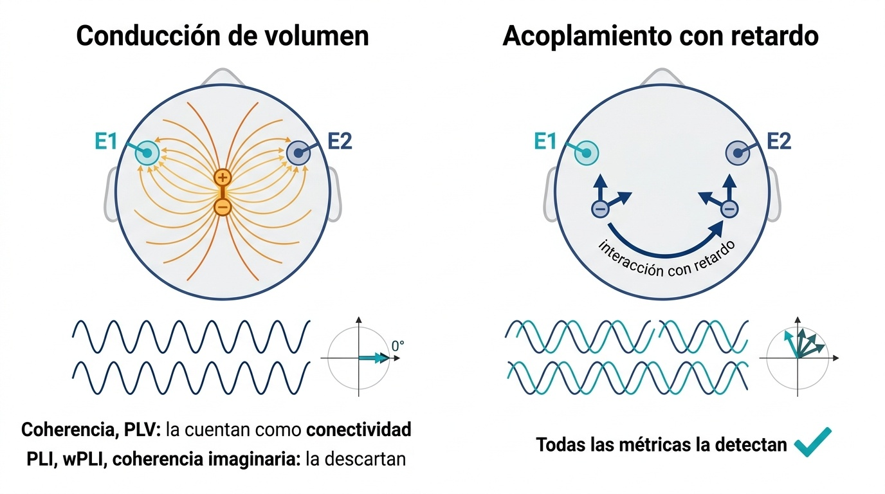
Procedencia y limitaciones de esta imagen
Procedencia. Ilustración conceptual generada con FigureLabs (IA generativa) el 6 de octubre de 2026 a partir de una descripción sin datos del estudio. Se conserva tal como se generó, salvo la corrección manual indicada. No se envió ningún dato del estudio. Fuente: ficha de procedencia del informe original.
Corrección manual. Se borraron dos iconos de valoración (un «visto» verde junto a «Coherencia, PLV: la cuentan como conectividad», que sugería que contarla es correcto cuando es un falso positivo, y un círculo con signo menos).
Limitaciones documentadas. En el panel derecho, las dos fuentes llevan flechas adicionales sin significado y los dos pares de ondas repiten la misma idea; los vectores del plano complejo no están a escala; en sentido estricto, el PLI y el wPLI no «descartan» la conducción de volumen, sino que no dan peso a la parte de la sincronía con desfase cero (o π).
Licencia. Los términos de uso y los derechos de distribución de la imagen no están documentados en el informe: pendiente
La figura 2.6 ilustra la diferencia.
Mostrar la explicación
En el primer caso, el desfase esperado es cero (o 180° si la polaridad es opuesta): el campo eléctrico llega a los dos electrodos prácticamente a la vez. En el segundo, el retardo de conducción \tau introduce un desfase \Delta\varphi = 360^\circ\cdot f\cdot\tau distinto de cero, que crece con la frecuencia: es el resultado del capítulo 1, que puedes explorar en la simulación de la Sección 1.1.2. Lo que sigue explica cómo aprovecha el wPLI esa diferencia.
2.5.1 Qué mide el wPLI, físicamente
La distinción entre desfase cero y desfase distinto de cero no es un convenio estadístico: sale de la física del registro. A las frecuencias del EEG, el campo eléctrico de una fuente se propaga por el cerebro, el líquido, el hueso y la piel de forma prácticamente instantánea, así que llega a todos los electrodos a la vez (Nolte et al. 2004). Una interacción real entre dos regiones, en cambio, viaja por axones, y eso tarda milisegundos: el retardo \tau es la longitud del tracto dividida por la velocidad de conducción. Un retardo fijo se convierte en un desfase que crece con la frecuencia, \Delta\varphi = 360^\circ\cdot f\cdot\tau (figura 2.7). Por eso el retardo se estima con la pendiente de la fase a lo largo de varias frecuencias (el retardo de grupo), no con el ángulo en una sola banda (Bastos y Schoffelen 2016; Chiarion et al. 2023).
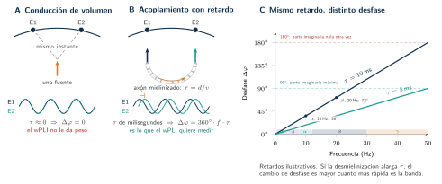
El panel C da sentido físico a la hipótesis mecanicista de la figura 2.4: si la desmielinización alarga o desestabiliza \tau, el efecto sobre la fase debería ser mayor en beta que en theta.
Para estimar el desfase, el EEG se corta en épocas y en cada una se calcula el espectro cruzado S_k entre los dos electrodos: un número complejo cuyo ángulo es el desfase de esa época. La conducción de volumen deja los S_k sobre el eje real; un acoplamiento con retardo los saca del eje, siempre hacia el mismo lado (figura 2.8). El PLI cuenta cuántas épocas caen a cada lado (Stam et al. 2007); el wPLI pondera cada época por su distancia al eje, |\operatorname{Im} S_k| (Vinck et al. 2011).
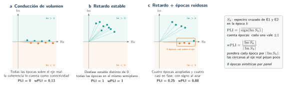
La diferencia entre las dos métricas se ve al descomponer el panel c época a época (figura 2.9). En el PLI, una época casi en fase cuyo signo ha decidido el ruido vota lo mismo que una época claramente acoplada; en el wPLI apenas cuenta. Por eso el wPLI resiste mejor el ruido y las fuentes débiles cercanas al desfase cero (Vinck et al. 2011). Esa resistencia se ha comprobado con EEG de alta densidad; con montajes de unos 30 canales, como el de NeuroMIND, no hay estudios que la confirmen (Chiarion et al. 2023).
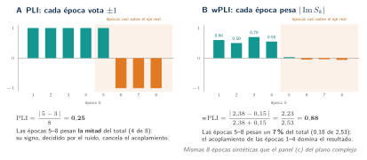
Lo que el wPLI no ve. Un acoplamiento real con desfase cercano a 0° o a 180° tiene parte imaginaria casi nula y el wPLI no lo distingue de la conducción de volumen. Es el precio de la robustez (figura 2.7, panel C), y no es un caso raro: redes corticales sincronizadas, incluso alejadas, pueden oscilar casi a desfase cero (Chiarion et al. 2023).
El texto dice que ciertas métricas «descartan» el desfase cero. Más exactamente, el wPLI se calcula con la parte imaginaria del espectro cruzado, \operatorname{Im} S_k, de modo que la componente real —la que produce una mezcla instantánea de fuentes— no aporta peso. Tres consecuencias:
- Con un número finito de épocas y ruido, \operatorname{Im} S_k no es exactamente cero ni siquiera en una mezcla puramente instantánea: en el panel a de la figura 2.8, el wPLI de las ocho épocas sintéticas es 0,13, no 0. Por eso las estimaciones con pocas épocas están sesgadas al alza; Vinck et al. (2011) lo aborda (su título menciona el sesgo por tamaño de muestra), y el pipeline de NeuroMIND dispone de un estimador sin sesgo (dwPLI) que la configuración actual no usa.
- El wPLI no distingue una interacción real con desfase próximo a 0° o 180° de una mezcla instantánea (recuadro anterior).
- La ficha de procedencia de la ilustración de la figura 2.6 ya matiza que el PLI y el wPLI no «descartan» la conducción de volumen, sino que no dan peso a la sincronía con desfase cero (o π).
Pregunta de comprensión ¿Por qué se acepta que el wPLI no pueda distinguir un acoplamiento real a 0° de la conducción de volumen?
Porque en el cuero cabelludo la mezcla instantánea de una misma fuente en varios electrodos es la fuente de error dominante: una métrica que contara la sincronía a desfase cero (la coherencia o el PLV, según la figura 2.6) produciría falsos positivos de conectividad. El wPLI elige no contarla y, con ello, pierde las interacciones reales que ocurran a desfase casi nulo. Es el «precio de la robustez» del recuadro anterior y la decisión del recuadro sobre las métricas de la Sección 2.5.3: se prefiere un riesgo de falsos negativos, conocido y acotado a ciertos desfases, a uno de falsos positivos difícil de separar del resultado. El informe señala además que ese precio no es despreciable, porque redes corticales sincronizadas pueden oscilar casi a desfase cero. interpretación
2.5.2 Simulación · PLI y wPLI con épocas sintéticas
Esta simulación genera épocas sintéticas y calcula, sobre las mismas épocas, el PLI, el wPLI y la coherencia. Sirve para ver con las manos tres cosas de la Sección 2.5.1: que el wPLI pondera cada época por la magnitud de su parte imaginaria y el PLI solo cuenta su signo; que un desfase de 0° o de 180° es invisible para ambos; y que una fuente común mezclada de forma instantánea sube la coherencia sin subir el PLI ni el wPLI.
Definiciones que usa la simulación. Con S_k = X_k\,\overline{Y_k} el espectro cruzado de la época k (a una sola frecuencia) y N épocas:
\mathrm{PLI}=\left|\frac{1}{N}\sum_{k}\operatorname{sgn}\operatorname{Im}S_k\right|,\qquad \mathrm{wPLI}=\frac{\left|\sum_k \operatorname{Im}S_k\right|}{\sum_k\left|\operatorname{Im}S_k\right|},
\mathrm{dwPLI}^2=\frac{\left(\sum_k \operatorname{Im}S_k\right)^2-\sum_k(\operatorname{Im}S_k)^2}{\left(\sum_k\left|\operatorname{Im}S_k\right|\right)^2-\sum_k(\operatorname{Im}S_k)^2},\qquad \mathrm{coh}^2=\frac{\left|\sum_k S_k\right|^2}{\sum_k|X_k|^2\;\sum_k|Y_k|^2}.
Si \sum_k|\operatorname{Im}S_k|=0, el wPLI se toma como 0. El dwPLI² es el estimador debiased de Vinck et al. (2011); puede salir negativo con pocas épocas.
Modelo (sintético). Por época: X_k=a_k u_k+m\,c_k+\sigma\,n^x_k e Y_k=a_k e^{-i\varphi}u_k+m\,c_k+\sigma\,n^y_k, con u,c,n^x,n^y gaussianas complejas independientes de varianza 1 y a_k\in\{0,1\} igual a 1 con probabilidad p. u es la fuente que interactúa, con desfase \varphi; c es una fuente común que los dos canales ven a la vez y con la misma fase (una caricatura de la conducción de volumen), con amplitud m (la «mezcla» de los controles; m=0 la elimina); n es ruido. El desfase \varphi hace el papel del retardo de conducción del capítulo 1 convertido en fase.
Pregunta guía: con N = 40, φ = 60° y sin mezcla, ¿qué valen el PLI y el wPLI? Sube la mezcla hasta 1 y pon la fracción acoplada a 0 %: ¿qué le pasa a la coherencia y qué a las otras dos? Después lleva φ a 0°.
Límites: N de 2 a 400; p de 0 a 100 %; φ de 0° a 180° (el signo del desfase solo cambia el signo de Im S, no las métricas); σ de 0 a 2; m de 0 a 1; semilla entera de 1 a 9999. Los controles no admiten valores fuera de rango.
Supuestos y diferencias con la realidad
- Datos sintéticos. Generados en el navegador con un generador pseudoaleatorio con semilla (mulberry32 y Box–Muller). No hay EEG, sujetos, canales reales ni resultados de NeuroMIND.
- Una sola frecuencia, dos canales. El pipeline calcula el wPLI por banda a partir de la señal filtrada, con épocas y estimadores propios (
src/connectivity/wPLI.jl); esta simulación no lo replica. - La mezcla instantánea es una caricatura de la conducción de volumen. Una única fuente común con la misma fase en los dos canales. La conducción de volumen real mezcla muchas fuentes con pesos que dependen de la geometría de la cabeza.
- Épocas independientes. En el EEG real las épocas consecutivas están correlacionadas y la fase de la interacción no es constante.
- Cero numérico. Si |Im S| no supera 10−12·|X||Y| en una época se toma 0, porque sería solo redondeo; así, con mezcla pura y sin ruido, PLI y wPLI valen 0 en lugar de medir el signo de errores de coma flotante.
- Curva frente a φ. Es una sola realización (misma semilla para todos los φ), no el valor esperado: con pocas épocas es irregular.
- Comprobación. La implementación se contrasta con una versión independiente en Julia (
scripts/generar_simulacion_wpli.jl) entests/verificar.mjs.
Versión estática (sin JavaScript). Ejemplo del panel c de la figura del informe: ocho épocas con estas partes imaginarias del espectro cruzado.
| k | 1 | 2 | 3 | 4 | 5 | 6 | 7 | 8 |
|---|---|---|---|---|---|---|---|---|
| \operatorname{Im}S_k | +0,60 | +0,50 | +0,70 | +0,55 | +0,03 | −0,05 | −0,04 | −0,06 |
Cinco épocas son positivas y tres negativas, así que PLI =|5-3|/8=0{,}25. La suma con signo es 2{,}23 y la suma de valores absolutos 2{,}53, así que wPLI =2{,}23/2{,}53\approx 0{,}881. Las tres épocas negativas y la débil positiva casi no pesan en el wPLI, pero cuentan tanto como las demás en el PLI. Ese contraste es el que justifica usar el wPLI frente al PLI cuando hay épocas con muy poca señal (Vinck et al. 2011). Estos valores se comprueban en tests/verificar.mjs (sección M).
2.5.2.1 Validación cruzada con MNE-Connectivity
Las definiciones de la simulación y el estimador del pipeline se contrastan con MNE-Connectivity, la biblioteca de conectividad de MNE-Python, solo entre iguales: los mismos números de entrada y la misma definición en los dos lados. Las cifras de las tablas no están escritas aquí: salen de ejecuciones guardadas en validation/ (validation/run_all.sh). MNE es una referencia de contraste, no una verdad matemática.
Las definiciones de la simulación. Se generan los coeficientes espectrales complejos del modelo y se entregan, idénticos, a MNE-Connectivity como un espectro complejo (sin series temporales, para que no intervengan fugas espectrales de las ventanas). Se compara el PLI, el wPLI, el dwPLI² (en MNE, wpli2_debiased) y la coherencia al cuadrado. Un caso con parte imaginaria exactamente nula (mezcla pura sin ruido) se muestra aparte porque, con \operatorname{Im}S\approx0, esas métricas no están definidas de forma útil y el resultado depende de cómo se trate el redondeo.
Validación cruzada · NeuroMIND–Julia ↔ MNE-Python
Estado: validado Clase: equivalencia
Se cumplen todas las condiciones de equivalencia y todas las variables cumplen su tolerancia.
Objetivo y clase. Contraste «equivalencia: misma definición y mismos parámetros; la diferencia es el error E entre dos implementaciones». Capítulo: 02. Fecha del contraste: 2026-10-27. MNE es una implementación independiente de contraste, no una verdad matemática.
Misma señal para ambas implementaciones (archivo: validation/fixtures/senal_c2.f64 · SHA-256: 4ffa14c72ae5d1897348d2098599dbf0f876266045d3f35fd490fb77ee9f9fb9 · semilla: 0 · fs (Hz): 0 · forma: [varios escenarios, N épocas, 2, Re,Im]).
- Julia
1.12.3 - DSP.jl
0.8.5 - Python
3.13.16 - MNE
1.13.2 - mne-connectivity
0.9.0 - SciPy
1.18.1 - NumPy
2.5.4
| Parámetro | Julia | MNE | igual |
|---|---|---|---|
| entrada | coeficientes complejos X_k, Y_k (un solo bin) | EpochsSpectrumArray complejo (N, 2, 1) | sí |
| PLI | |media(signo(Im S))| | method='pli' | sí |
| wPLI | |ΣIm S| / Σ|Im S| | method='wpli' | sí |
| dwPLI² | (Σ² − ΣIm²)/(Σ|Im|² − ΣIm²) | method='wpli2_debiased' | sí |
| coherencia² | |ΣS|² / (ΣSxx·ΣSyy) | method='coh' al cuadrado | sí |
- Los dos entornos leen los mismos coeficientes complejos X_k, Y_k (SHA-256 del fixture coincide con el registrado) — cumple
- Mismo par y orientación: Sxy = X·conj(Y) con indices=([0],[1]) (comprobado además a mano en numpy durante el desarrollo) — cumple
- Mismas definiciones: PLI = |media(sgn Im S)|, wPLI = |ΣIm S|/Σ|Im S|, dwPLI² = wpli2_debiased, coherencia² = (|ΣS|/√(ΣSxx·ΣSyy))² — cumple
- Escenarios bien condicionados (Im S no es solo redondeo); el caso mal condicionado se muestra aparte, sin tolerancia — cumple
Error absoluto E_abs = |x_J − x_M|; E (%) = 100·|x_J − x_M|/|x_M|. En vectores y matrices la fila muestra la norma: E_abs máximo y E%,2 = 100·‖x_J − x_M‖₂/‖x_M‖₂.
| Variable | Julia | MNE-Python | E_abs | E (%) | norma | tolerancia | cumple |
|---|---|---|---|---|---|---|---|
| acoplada 60 (N = 40): PLI | 7,50·10⁻¹ | 7,50·10⁻¹ | 0 | 0 | escalar | E_abs ≤ 1,00·10⁻¹² | cumple |
| acoplada 60 (N = 40): wPLI | 9,47·10⁻¹ | 9,47·10⁻¹ | 0 | 0 | escalar | E_abs ≤ 1,00·10⁻¹² | cumple |
| acoplada 60 (N = 40): dwPLI² | 8,93·10⁻¹ | 8,93·10⁻¹ | 1,11·10⁻¹⁶ | 1,24·10⁻¹⁴ | escalar | E_abs ≤ 1,00·10⁻¹⁰ | cumple |
| acoplada 60 (N = 40): coherencia² | 5,38·10⁻¹ | 5,38·10⁻¹ | 3,33·10⁻¹⁶ | 6,19·10⁻¹⁴ | escalar | E_abs ≤ 1,00·10⁻¹² | cumple |
| desfase cero con mezcla (N = 60): PLI | 2,33·10⁻¹ | 2,33·10⁻¹ | 0 | 0 | escalar | E_abs ≤ 1,00·10⁻¹² | cumple |
| desfase cero con mezcla (N = 60): wPLI | 3,79·10⁻¹ | 3,79·10⁻¹ | 1,11·10⁻¹⁶ | 2,93·10⁻¹⁴ | escalar | E_abs ≤ 1,00·10⁻¹² | cumple |
| desfase cero con mezcla (N = 60): dwPLI² | 1,18·10⁻¹ | 1,18·10⁻¹ | 6,94·10⁻¹⁷ | 5,88·10⁻¹⁴ | escalar | E_abs ≤ 1,00·10⁻¹⁰ | cumple |
| desfase cero con mezcla (N = 60): coherencia² | 9,44·10⁻¹ | 9,44·10⁻¹ | 2,22·10⁻¹⁶ | 2,35·10⁻¹⁴ | escalar | E_abs ≤ 1,00·10⁻¹² | cumple |
Ver las 24 variables restantes
| Variable | Julia | MNE-Python | E_abs | E (%) | norma | tolerancia | cumple |
|---|---|---|---|---|---|---|---|
| mitad acopladas 90 (N = 25): PLI | 6,80·10⁻¹ | 6,80·10⁻¹ | 0 | 0 | escalar | E_abs ≤ 1,00·10⁻¹² | cumple |
| mitad acopladas 90 (N = 25): wPLI | 8,79·10⁻¹ | 8,79·10⁻¹ | 0 | 0 | escalar | E_abs ≤ 1,00·10⁻¹² | cumple |
| mitad acopladas 90 (N = 25): dwPLI² | 7,51·10⁻¹ | 7,51·10⁻¹ | 0 | 0 | escalar | E_abs ≤ 1,00·10⁻¹⁰ | cumple |
| mitad acopladas 90 (N = 25): coherencia² | 3,43·10⁻¹ | 3,43·10⁻¹ | 5,55·10⁻¹⁷ | 1,62·10⁻¹⁴ | escalar | E_abs ≤ 1,00·10⁻¹² | cumple |
| sin acoplamiento (N = 80): PLI | 2,50·10⁻² | 2,50·10⁻² | 0 | 0 | escalar | E_abs ≤ 1,00·10⁻¹² | cumple |
| sin acoplamiento (N = 80): wPLI | 1,40·10⁻² | 1,40·10⁻² | 2,43·10⁻¹⁷ | 1,73·10⁻¹³ | escalar | E_abs ≤ 1,00·10⁻¹² | cumple |
| sin acoplamiento (N = 80): dwPLI² | −2,77·10⁻² | −2,77·10⁻² | 3,47·10⁻¹⁸ | 1,25·10⁻¹⁴ | escalar | E_abs ≤ 1,00·10⁻¹⁰ | cumple |
| sin acoplamiento (N = 80): coherencia² | 1,20·10⁻³ | 1,20·10⁻³ | 6,51·10⁻¹⁹ | 5,43·10⁻¹⁴ | escalar | E_abs ≤ 1,00·10⁻¹² | cumple |
| fase 180 con ruido (N = 100): PLI | 2,00·10⁻² | 2,00·10⁻² | 0 | 0 | escalar | E_abs ≤ 1,00·10⁻¹² | cumple |
| fase 180 con ruido (N = 100): wPLI | 3,84·10⁻² | 3,84·10⁻² | 0 | 0 | escalar | E_abs ≤ 1,00·10⁻¹² | cumple |
| fase 180 con ruido (N = 100): dwPLI² | −1,58·10⁻² | −1,58·10⁻² | 3,47·10⁻¹⁸ | 2,20·10⁻¹⁴ | escalar | E_abs ≤ 1,00·10⁻¹⁰ | cumple |
| fase 180 con ruido (N = 100): coherencia² | 6,17·10⁻¹ | 6,17·10⁻¹ | 3,33·10⁻¹⁶ | 5,40·10⁻¹⁴ | escalar | E_abs ≤ 1,00·10⁻¹² | cumple |
| pocas epocas (N = 8): PLI | 5,00·10⁻¹ | 5,00·10⁻¹ | 0 | 0 | escalar | E_abs ≤ 1,00·10⁻¹² | cumple |
| pocas epocas (N = 8): wPLI | 3,60·10⁻¹ | 3,60·10⁻¹ | 5,55·10⁻¹⁷ | 1,54·10⁻¹⁴ | escalar | E_abs ≤ 1,00·10⁻¹² | cumple |
| pocas epocas (N = 8): dwPLI² | −9,99·10⁻² | −9,99·10⁻² | 5,55·10⁻¹⁷ | 5,56·10⁻¹⁴ | escalar | E_abs ≤ 1,00·10⁻¹⁰ | cumple |
| pocas epocas (N = 8): coherencia² | 4,28·10⁻² | 4,28·10⁻² | 2,08·10⁻¹⁷ | 4,87·10⁻¹⁴ | escalar | E_abs ≤ 1,00·10⁻¹² | cumple |
| muchas epocas (N = 2000): PLI | 2,89·10⁻¹ | 2,89·10⁻¹ | 0 | 0 | escalar | E_abs ≤ 1,00·10⁻¹² | cumple |
| muchas epocas (N = 2000): wPLI | 5,88·10⁻¹ | 5,88·10⁻¹ | 1,89·10⁻¹⁵ | 3,21·10⁻¹³ | escalar | E_abs ≤ 1,00·10⁻¹² | cumple |
| muchas epocas (N = 2000): dwPLI² | 3,45·10⁻¹ | 3,45·10⁻¹ | 2,22·10⁻¹⁵ | 6,44·10⁻¹³ | escalar | E_abs ≤ 1,00·10⁻¹⁰ | cumple |
| muchas epocas (N = 2000): coherencia² | 3,60·10⁻¹ | 3,60·10⁻¹ | 7,22·10⁻¹⁶ | 2,01·10⁻¹³ | escalar | E_abs ≤ 1,00·10⁻¹² | cumple |
| fase 90 sin ruido (N = 30): PLI | 1,00·10⁰ | 1,00·10⁰ | 0 | 0 | escalar | E_abs ≤ 1,00·10⁻¹² | cumple |
| fase 90 sin ruido (N = 30): wPLI | 1,00·10⁰ | 1,00·10⁰ | 0 | 0 | escalar | E_abs ≤ 1,00·10⁻¹² | cumple |
| fase 90 sin ruido (N = 30): dwPLI² | 1,00·10⁰ | 1,00·10⁰ | 0 | 0 | escalar | E_abs ≤ 1,00·10⁻¹⁰ | cumple |
| fase 90 sin ruido (N = 30): coherencia² | 1,00·10⁰ | 1,00·10⁰ | 0 | 0 | escalar | E_abs ≤ 1,00·10⁻¹² | cumple |
E (%) solo se define si |x_M| > 10⁻¹²·máx|x_M|; en otro caso aparece «no definido» y vale E_abs. Los valores se muestran con 3 cifras significativas; los datos completos están sin redondear en el JSON de origen.
| Magnitud | Julia frente a la referencia | MNE frente a la referencia | tolerancia | Julia | MNE |
|---|---|---|---|---|---|
| fase 90° sin ruido: PLI (analítico = 1) | E_abs: 0 | E_abs: 0 | E_abs ≤ 1,00·10⁻¹² | cumple | cumple |
| fase 90° sin ruido: wPLI (analítico = 1) | E_abs: 0 | E_abs: 0 | E_abs ≤ 1,00·10⁻¹² | cumple | cumple |
| fase 90° sin ruido: dwPLI² (analítico = 1) | E_abs: 0 | E_abs: 0 | E_abs ≤ 1,00·10⁻¹⁰ | cumple | cumple |
| fase 90° sin ruido: coherencia² (analítico = 1) | E_abs: 0 | E_abs: 0 | E_abs ≤ 1,00·10⁻¹² | cumple | cumple |
Investigación de «mezcla_pura_sin_ruido»
Escenario de ilustración, excluido de las tolerancias desde el diseño: con una única fuente común y sin ruido, Im S vale exactamente 0 en teoría y ±1e-17 por redondeo. La referencia del libro toma esos valores como cero numérico (|Im S| ≤ 1e-12·|X||Y|), de modo que PLI y wPLI valen 0 y 0; MNE usa la parte imaginaria tal cual, así que PLI y wPLI son el signo y el peso de errores de redondeo (0,2 y 0,0244). Es una diferencia de definición en un caso mal condicionado, no un fallo de ninguna implementación: con Im S ≈ 0 esas métricas no están definidas de forma útil.
Sobre los mismos coeficientes espectrales complejos, la implementación de referencia del libro (usada para validar la simulación del cap. 2) y mne-connectivity dan los mismos PLI, wPLI, dwPLI² y coherencia² en todos los escenarios bien condicionados, a ~1e-15. Esto valida las definiciones de la simulación; no valida el pipeline (que no calcula PLI ni coherencia), ni dice nada sobre datos reales.
Julia · validation/julia/c2_simulacion.jl
m = metricas(imS_de(X, Y); X, Y)Python · validation/python/c2_simulacion.py
spec = mne.time_frequency.EpochsSpectrumArray(Z, info, np.array([10.0]))El estimador del pipeline, por frecuencia. El wPLI y el dwPLI de NeuroMIND se calculan sobre una banda, como cociente de sumas sobre épocas y frecuencias, mientras que MNE-Connectivity calcula un valor por frecuencia y, si se pide, lo promedia después: no son la misma cantidad, y por eso aquí se compara por frecuencia, con una «banda» de un solo bin en el código real del pipeline. Solo el camino fourier_csd tiene equivalente (mode='fourier'): el método por defecto del pipeline (hilbert) no existe en MNE y el multitaper pondera los tapers de otra forma. Una primera comparación dio diferencias apreciables hasta que se descubrió una condición que faltaba: MNE resta siempre la media de cada época y el pipeline no lo hace en este paso. Una vez igualada, la coincidencia es del orden del redondeo; el detalle está en el bloque.
Validación cruzada · NeuroMIND–Julia ↔ MNE-Python
Estado: validado Clase: equivalencia
Se cumplen todas las condiciones de equivalencia y todas las variables cumplen su tolerancia.
Objetivo y clase. Contraste «equivalencia: misma definición y mismos parámetros; la diferencia es el error E entre dos implementaciones». Capítulo: 13. Fecha del contraste: 2026-10-27. MNE es una implementación independiente de contraste, no una verdad matemática.
Misma señal para ambas implementaciones (archivo: validation/fixtures/senal_c1.f64 · SHA-256: e04e6a6f641fa0c0e2a09ac9bfcb0565301e22d9d600c4673e164c2525e7d268 · semilla: 20261028 · fs (Hz): 500 · forma: [varios escenarios, 2, 500]).
- Julia
1.12.3 - DSP.jl
0.8.5 - Python
3.13.16 - MNE
1.13.2 - mne-connectivity
0.9.0 - SciPy
1.18.1 - NumPy
2.5.4
| Parámetro | Julia | MNE | igual |
|---|---|---|---|
| estimador | FourierCSDEstimator (código real, banda de un solo bin) | spectral_connectivity_epochs(mode='fourier', faverage=False) | sí |
| ventana | Hann simétrica, N = 500 | np.hanning(500) | sí |
| definición del wPLI | |Σ Im Sxy| / Σ |Im Sxy| sobre épocas | |Σ Im Sxy| / Σ |Im Sxy| sobre épocas | sí |
| dwPLI | (Σ² − ΣIm²)/(Σ|Im|² − ΣIm²), estimador de wPLI² | wpli2_debiased | sí |
| frecuencias comparadas (Hz) | 1…249 (un bin por llamada) | fmin=1, fmax=249 | sí |
- Los dos entornos leen los mismos bytes del fixture (SHA-256 coincide con el registrado) — cumple
- Las mismas épocas: misma forma [época][2 canales][500 muestras] y mismo número de bins comparados (1…249 Hz) — cumple
- Las frecuencias devueltas por mne-connectivity son exactamente 1…249 Hz — cumple
- Ventana Hann simétrica idéntica: 0,5·(1 − cos(2πi/(N−1))) del pipeline = np.hanning(N) de MNE (diferencia < 1e-14) — cumple
- Misma resta de la media por época: MNE la resta siempre (_mt_spectra, remove_dc=True, no configurable desde spectral_connectivity_epochs); el pipeline no la resta en este paso, así que se resta en el lado Julia antes de llamar a la función real — cumple
- Sin promedio en banda: cada «banda» del pipeline contiene un solo bin, así que su cociente de sumas es el valor por frecuencia — cumple
- Mismo par y orientación: Sxy = X₁·conj(X₂) con indices=([0],[1]) — cumple
Error absoluto E_abs = |x_J − x_M|; E (%) = 100·|x_J − x_M|/|x_M|. En vectores y matrices la fila muestra la norma: E_abs máximo y E%,2 = 100·‖x_J − x_M‖₂/‖x_M‖₂.
| Variable | Julia | MNE-Python | E_abs | E (%) | norma | tolerancia | cumple |
|---|---|---|---|---|---|---|---|
| acoplada 60 ruido (N = 60): wPLI por frecuencia | — | — | máx. 4,44·10⁻¹⁶ | 5,89·10⁻¹⁴ | vector o matriz, n = 249 | E%,2 ≤ 1,00·10⁻⁸ | cumple |
| RMSE 1,30·10⁻¹⁶ · E_rel máx. (elementos válidos) 1,04·10⁻¹¹ · elementos excluidos del error relativo 0 % | |||||||
| desfase cero mezcla (N = 60): wPLI por frecuencia | — | — | máx. 1,07·10⁻¹⁵ | 1,00·10⁻¹³ | vector o matriz, n = 249 | E%,2 ≤ 1,00·10⁻⁸ | cumple |
| RMSE 1,92·10⁻¹⁶ · E_rel máx. (elementos válidos) 2,23·10⁻¹¹ · elementos excluidos del error relativo 0 % | |||||||
Ver las 8 variables restantes
| Variable | Julia | MNE-Python | E_abs | E (%) | norma | tolerancia | cumple |
|---|---|---|---|---|---|---|---|
| acoplada 60 ruido (N = 60): dwPLI (wpli2_debiased) por frecuencia | — | — | máx. 5,55·10⁻¹⁶ | 5,15·10⁻¹⁴ | vector o matriz, n = 249 | E%,2 ≤ 1,00·10⁻⁸ | cumple |
| RMSE 6,30·10⁻¹⁷ · E_rel máx. (elementos válidos) 1,33·10⁻¹¹ · elementos excluidos del error relativo 0 % | |||||||
| desfase cero mezcla (N = 60): dwPLI (wpli2_debiased) por frecuencia | — | — | máx. 5,55·10⁻¹⁶ | 1,39·10⁻¹³ | vector o matriz, n = 249 | E%,2 ≤ 1,00·10⁻⁸ | cumple |
| RMSE 7,54·10⁻¹⁷ · E_rel máx. (elementos válidos) 5,09·10⁻¹¹ · elementos excluidos del error relativo 0 % | |||||||
| sin acoplamiento (N = 60): wPLI por frecuencia | — | — | máx. 3,61·10⁻¹⁶ | 6,45·10⁻¹⁴ | vector o matriz, n = 249 | E%,2 ≤ 1,00·10⁻⁸ | cumple |
| RMSE 1,22·10⁻¹⁶ · E_rel máx. (elementos válidos) 1,69·10⁻¹⁰ · elementos excluidos del error relativo 0 % | |||||||
| sin acoplamiento (N = 60): dwPLI (wpli2_debiased) por frecuencia | — | — | máx. 2,22·10⁻¹⁶ | 1,16·10⁻¹³ | vector o matriz, n = 249 | E%,2 ≤ 1,00·10⁻⁸ | cumple |
| RMSE 5,34·10⁻¹⁷ · E_rel máx. (elementos válidos) 6,00·10⁻¹² · elementos excluidos del error relativo 0 % | |||||||
| pocas epocas (N = 8): wPLI por frecuencia | — | — | máx. 2,78·10⁻¹⁵ | 8,67·10⁻¹⁴ | vector o matriz, n = 249 | E%,2 ≤ 1,00·10⁻⁸ | cumple |
| RMSE 3,89·10⁻¹⁶ · E_rel máx. (elementos válidos) 1,36·10⁻¹¹ · elementos excluidos del error relativo 0 % | |||||||
| pocas epocas (N = 8): dwPLI (wpli2_debiased) por frecuencia | — | — | máx. 4,61·10⁻¹⁵ | 1,64·10⁻¹³ | vector o matriz, n = 249 | E%,2 ≤ 1,00·10⁻⁸ | cumple |
| RMSE 4,83·10⁻¹⁶ · E_rel máx. (elementos válidos) 8,26·10⁻¹² · elementos excluidos del error relativo 0 % | |||||||
| mitad acopladas 90 (N = 40): wPLI por frecuencia | — | — | máx. 5,55·10⁻¹⁶ | 5,45·10⁻¹⁴ | vector o matriz, n = 249 | E%,2 ≤ 1,00·10⁻⁸ | cumple |
| RMSE 1,33·10⁻¹⁶ · E_rel máx. (elementos válidos) 1,48·10⁻¹⁰ · elementos excluidos del error relativo 0 % | |||||||
| mitad acopladas 90 (N = 40): dwPLI (wpli2_debiased) por frecuencia | — | — | máx. 6,66·10⁻¹⁶ | 7,02·10⁻¹⁴ | vector o matriz, n = 249 | E%,2 ≤ 1,00·10⁻⁸ | cumple |
| RMSE 8,44·10⁻¹⁷ · E_rel máx. (elementos válidos) 1,41·10⁻¹⁰ · elementos excluidos del error relativo 0 % | |||||||
E (%) solo se define si |x_M| > 10⁻¹²·máx|x_M|; en otro caso aparece «no definido» y vale E_abs. Los valores se muestran con 3 cifras significativas; los datos completos están sin redondear en el JSON de origen.
Investigación de «todas»
Una primera ejecución, sin restar la media de cada época en el lado Julia, dio diferencias de hasta 5.8 % (E_{%,2}) entre el pipeline y MNE, aunque todas las condiciones listadas entonces se cumplían. Una réplica independiente en numpy mostró que el resultado sin restar la media coincide con Julia (~4e-16) y el resultado con la media restada coincide con MNE (~4e-16): mne-connectivity resta siempre la media de cada época (_mt_spectra, remove_dc=True) y el pipeline no lo hace en el paso del wPLI. Se añadió esa condición de equivalencia y se igualó restando la media en el lado Julia; las tolerancias no se modificaron. La tabla muestra la comparación «tal cual»: con los datos tal como entran al pipeline y MNE restando la media. En datos EEG ya filtrados con paso alto la media de cada época es casi nula, así que el efecto sería menor, pero no se ha cuantificado con datos reales aquí.
- NeuroMIND (Julia)
- MNE-Connectivity
- Julia − MNE
- NeuroMIND (Julia)
- MNE-Connectivity
- Julia − MNE
Con las mismas épocas, la misma ventana de Hann, el mismo par de canales y un solo bin por «banda», el wPLI y el dwPLI del camino fourier_csd del pipeline coinciden con los de mne-connectivity (mode='fourier') al nivel del redondeo en todos los escenarios. Esto valida que ambos estimadores calculan lo mismo por frecuencia. No valida el método por defecto del pipeline (hilbert, sin equivalente en MNE) ni el multitaper (pesos distintos), y la agregación en banda del pipeline (cociente de sumas sobre épocas y frecuencias) difiere por definición de promediar los valores por frecuencia (faverage), de modo que los números por banda no son intercambiables.
Julia · validation/julia/c1_conectividad.jl
push!(w, NeuroMIND._compute_band_matrix(est_w, datos_k, fs, Float64(k), Float64(k), 2, nsamp, N)[1, 2])
push!(dw, NeuroMIND._compute_band_matrix(est_dw, datos_k, fs, Float64(k), Float64(k), 2, nsamp, N)[1, 2])Python · validation/python/c1_conectividad.py
con = mc.spectral_connectivity_epochs(X, method=["wpli", "wpli2_debiased"], mode="fourier", sfreq=fs, indices=([0], [1]),
fmin=1.0, fmax=249.0, faverage=False, verbose="ERROR")Esta validación comprueba que dos programas calculan lo mismo bajo las mismas condiciones; no comprueba que el wPLI de NeuroMIND esté libre de conducción de volumen, ni qué ocurre con el método hilbert o con datos reales, ni el efecto del filtrado de fase no nula sobre el wPLI (véase la Sección 6.3.2).
- No demuestra que el wPLI de NeuroMIND esté libre de conducción de volumen: con 31 canales y un montaje de referencia común, esa cuestión es empírica y se aborda en el capítulo 13 del informe.
- No estima ningún desfase, retardo ni velocidad de conducción de pacientes con EM.
- No valida por sí sola el estimador del pipeline, que es otro código con otras opciones (Hilbert, multitaper,
use_dwpli); esa comparación, solo para el camino de Fourier y por frecuencia, está en la Sección 2.5.2.1. - No sustituye a los estudios del capítulo: solo ilustra una propiedad matemática de las definiciones.
2.5.3 Qué métricas usa la literatura
| Métrica | ¿Robusta? | Estudios en EM |
|---|---|---|
| Coherencia (magnitud) | No | Leocani (2000), Buyukturkoglu et al. (2017)a, Memon et al. (2026), Elkholy et al. (2026) |
| Coherencia interhemisférica (IHCM) | No | Cover et al. (2006) |
| Ángulo de fase de la coherencia | Noc | Elkholy et al. (2026) |
| Verosimilitud de sincronización | No | Hardmeier et al. (2012), Schoonheim et al. (2013) |
| Correlación de envolventes | Síb | Sjøgård et al. (2021), Simon et al. (2023) |
| Coherencia retardada (LORETA) | Sí | Vecchio et al. (2017), Jouzizadeh et al. (2021) |
| Coherencia imaginaria | Sí | Shirani y Mohebbi (2022) |
| Función de transferencia dirigida | No | Shirani y Mohebbi (2022) |
| PLI | Sí | Tewarie et al. (2013), Tewarie et al. (2014), Nauta et al. (2021), Simon et al. (2023) |
| wPLI | Sí | Tramonti et al. (2019) |
| wSMI | Sí | Tramonti et al. (2019) |
- Derivaciones bipolares, que atenúan la referencia común. b) Solo tras ortogonalizar las series. c) El «retardo de fase» de NeuroGuide: valor absoluto del ángulo de la coherencia, en grados. Hereda la sensibilidad de la coherencia a la mezcla instantánea, y con coherencia baja el ángulo está mal definido. Robustez según Nolte et al. (2004), Stam et al. (2007), Vinck et al. (2011) y
El tabla 2.2 deja claras dos cosas. Primero, la mitad de la evidencia en EM procede de métricas que no descartan el desfase cero, y eso complica comparar sus hallazgos con un estudio de wPLI. Segundo, el wPLI solo aparece en un estudio sin controles (Tramonti et al. 2019). El estudio de fase más reciente (Elkholy et al. 2026) usa el ángulo de la coherencia y recomienda pasar al wPLI. Las métricas de grafo varían tanto como las de conectividad: mundo pequeño, centralidad de intermediación o de vector propio, diámetro, eficiencia, árboles de expansión mínima (Farahani et al. 2019). Por eso, que un estudio «confirme» a otro casi nunca es una réplica.
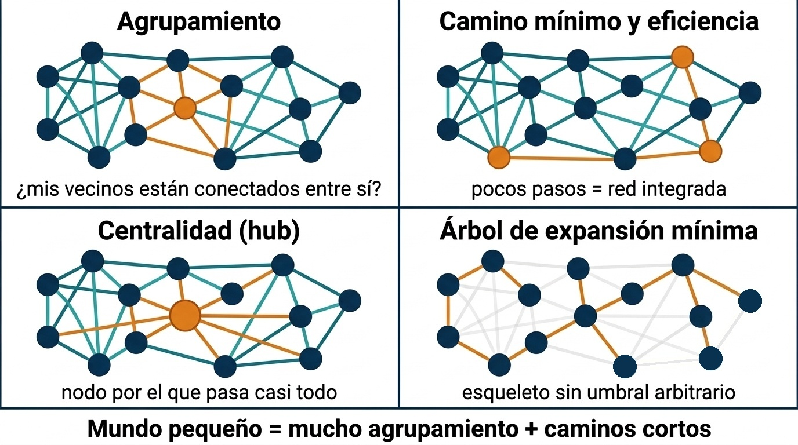
Procedencia y limitaciones de esta imagen
Procedencia. Ilustración conceptual generada con FigureLabs (IA generativa) el 6 de octubre de 2026 a partir de una descripción sin datos del estudio. Se conserva tal como se generó, salvo la corrección manual indicada. No se envió ningún dato del estudio. Fuente: ficha de procedencia del informe original.
Corrección manual. Se editó una versión para conectar un nodo que quedaba fuera del árbol de expansión mínima; la edición creó un bucle y una corrección manual posterior pasó dos aristas ámbar del panel «Árbol de expansión mínima» a gris de fondo, de modo que el árbol queda con 14 nodos, 13 aristas y sin ciclos.
Limitaciones documentadas. En «Agrupamiento» se resaltan las aristas del nodo y de sus vecinos, no solo los triángulos; en «Centralidad» el hub se define de forma intuitiva (por él pasan muchas aristas resaltadas), no por un cálculo; el árbol de expansión mínima está dibujado a mano y no corresponde a pesos reales; el grafo es binario, mientras que los estudios usan grafos ponderados.
Licencia. Los términos de uso y los derechos de distribución de la imagen no están documentados en el informe: pendiente
La figura 2.10 resume qué mide cada una. NeuroMIND no usa métricas de grafo en su análisis principal.
Decisión: wPLI sensor a sensor, sin umbral de red, como métrica principal (cap. 13 del informe original).
Motivo: es robusto al desfase cero y es la métrica que la propia literatura recomienda y no ha aplicado con controles en EM (Memon et al. 2026).
Coste: pierde las interacciones reales a desfase cero y es más variable entre sujetos que el PLI (Hardmeier et al. 2014).
2.5.4 De electrodos a regiones
Varios estudios de EEG en sensores no informan de pares de electrodos sino de regiones: coherencia «entre áreas homólogas» (Leocani 2000), «entre temporales» o «fronto-temporal izquierda» (Elkholy et al. 2026), «temporo-parietal» (Buyukturkoglu et al. 2017). Una región de interés (ROI) en sensores es solo eso: un grupo de electrodos vecinos sobre la misma zona del cuero cabelludo. No es una región cortical, porque cada electrodo recoge actividad de una zona amplia de corteza (figura 2.5), y cada estudio agrupa los electrodos a su manera. Cuando dos artículos dicen «temporal», no tienen por qué estar hablando de los mismos canales.
NeuroMIND trabaja hoy canal a canal: 31 canales son 465 pares por banda y 3 255 contrastes contando las siete bandas, y la corrección por comparaciones múltiples se lleva buena parte de la potencia estadística. La propuesta en discusión (CONN-01) agrupa los canales en 7 ROIs y reduce el problema a 21 aristas por banda (figura 2.11).
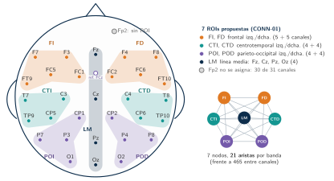
CONN-01 sobre el montaje real de 31 canales: frontal, centrotemporal y parieto-occipital, cada una izquierda y derecha, más la línea media. Suman 30 canales: Fp2 no figura en ninguna ROI de la propuesta pendiente. FCz es la referencia de adquisición, no un canal de análisis. Derecha: la red resultante, con 7 nodos y 21 aristas por banda. La variante de 11 ROIs no se dibuja porque su composición exacta no está escrita. Figura TikZ propia del informe original.
Agrupar por regiones no cambia la métrica, cambia lo que se promedia. El wPLI se calcula primero para cada par de canales y después se promedian los pares que unen dos ROIs; promediar antes las señales de una ROI sumaría fases distintas y dejaría sobre todo la parte común a canales vecinos, que es justo la conducción de volumen (figura 2.12). La agregación tiene un coste: si un canal cae por QC en un sujeto, su ROI se construye con menos pares y el número resultante no lo muestra (CONN-04). Como orientación, se ha propuesto no superar un 5 % de canales malos para dar por bueno un registro (Chiarion et al. 2023): con 31 canales, eso es un solo canal.
Hay otras dos formas de pasar a regiones, y ninguna encaja con NeuroMIND. La primera es tratar cada ROI como un bloque de canales y medir la dependencia entre bloques con una métrica multivariada, como la coherencia de bloque (Chiarion et al. 2023). Pero esas métricas derivan de la coherencia, que no descarta el desfase cero. La segunda es reconstruir las fuentes y definir las regiones sobre la corteza: es la opción que más se recomienda, porque la conectividad entre electrodos puede reflejar una sola región activa (Chiarion et al. 2023). Sin embargo, la reconstrucción solo reduce la dispersión del campo, no la elimina (Mazzara et al. 2025), y con solo 31 canales la localización sería gruesa (figura 2.5).
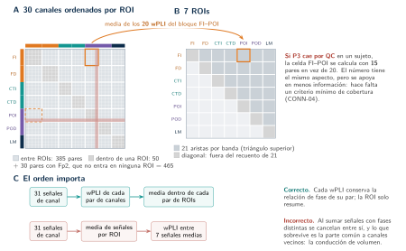
CONN-04). C: el orden correcto es wPLI primero y media después. Esquema sin datos. Figura TikZ propia del informe original.
2.5.5 Comparación de métodos de conectividad
La tabla 2.2 dice qué métrica usó cada estudio y si es robusta a la sincronía a desfase cero. La tabla 2.3 pone lado a lado los estimadores que el capítulo ya menciona, con las propiedades que más importan al leer sus resultados o al elegir entre ellos. No repite la teoría de cada métrica, que está en el capítulo 13 del informe original (aún no migrado al libro). Notación de la Sección 2.5.2: S_k=X_k\overline{Y_k} es el espectro cruzado de la época k entre dos canales, a una frecuencia, y N es el número de épocas.
| Métrica | Qué mide | ¿Descarta el desfase cero? | ¿Usa la magnitud de \operatorname{Im}S_k? | Sesgo con pocas épocas | Rango | Nombre en mne-connectivity |
|---|---|---|---|---|---|---|
| Coherencia (magnitud) | Módulo de la media de S_k, normalizado por las potencias de los dos canales | No: la sincronía instantánea cuenta como conectividad | No: usa S_k completo (parte real e imaginaria) | Al alza interpretación | 0 a 1 | coh |
| PLV | Consistencia del desfase entre épocas, sin amplitud (S_k dividido por su módulo) | No | No: solo la fase de S_k | Al alza interpretación | 0 a 1 | plv |
| Coherencia imaginaria (Nolte et al. 2004) | Parte imaginaria de la media de S_k, normalizada por las potencias | Sí: la parte real no aporta; no ve acoplamientos reales a \approx0^\circ o 180^\circ | En parte: usa \operatorname{Im} de la media, no pondera época a época | No tratado en el capítulo | -1 a 1 con signo; 0 a 1 en valor absoluto | imcoh (devuelve el valor con signo) |
| PLI (Stam et al. 2007) | Asimetría del signo de \operatorname{Im}S_k: cuántas épocas caen a cada lado | Sí (igual) | No: solo el signo; una época casi en fase pesa como una claramente acoplada | Al alza interpretación | 0 a 1 | pli |
| wPLI (Vinck et al. 2011) | Signo de \operatorname{Im}S_k ponderado por su magnitud | Sí (igual) | Sí: pesa cada época por \lvert\operatorname{Im}S_k\rvert | Al alza: con ocho épocas de pura conducción de volumen, el panel a de la figura 2.8 da 0,13, no 0 | 0 a 1 | wpli |
| dwPLI^2 (wPLI^2 debiased) (Vinck et al. 2011) | Estimador sin sesgo del cuadrado del wPLI | Sí (igual) | Sí (mismas \operatorname{Im}S_k) | Diseñado para corregirlo; puede salir negativo con pocas épocas (Sección 2.5.2) | -1 a 1 interpretación | wpli2_debiased |
Fuentes y estado. Fórmulas y nombres: leídos en el docstring y en el código de mne_connectivity.spectral_connectivity_epochs de mne-connectivity 0.9.0, la versión fijada en validation/python/uv.lock; confirmado como lectura, sin ejecutar nada para esta tabla. Equivalencia numérica con MNE-Connectivity: comprobada para el PLI, el wPLI, el dwPLI^2 y la coherencia^2 de la simulación, sobre los mismos coeficientes complejos, y para el wPLI y el dwPLI del camino de Fourier del pipeline, por frecuencia (Sección 2.5.2.1). El método por defecto del pipeline (hilbert) no tiene equivalente en MNE, y el multitaper del pipeline pondera los tapers de otra forma, por lo que tampoco es equivalente. Sesgo: «al alza» se razona, no se mide aquí: la media de N términos sin relación real no vale 0, y su módulo (o su valor absoluto) es mayor cuanto menos épocas haya. Sobre el sesgo de la coherencia y del PLV el capítulo no cita nada; sobre el del wPLI y el dwPLI^2 remite a Vinck et al. (2011). Rango: el de la coherencia es el de su magnitud (la Sección 2.5.2 usa coherencia^2); el de dwPLI^2 se deduce de su definición. La documentación de mne-connectivity ofrece además otros estimadores (por ejemplo ppc o pli2_unbiased) que el capítulo no trata y que no se incluyen.
Cómo leer la tabla.
- «Descartar» no es «eliminar». Las cuatro métricas que descartan el desfase cero se apoyan en \operatorname{Im}S_k: no dan peso a la componente real, pero con épocas finitas y ruido \operatorname{Im}S_k no es exactamente 0 (véase la precisión añadida en la Sección 2.5), y ninguna ve un acoplamiento real cercano a 0^\circ o 180^\circ.
- PLI, wPLI y dwPLI^2 no son la misma cantidad. El PLI cuenta signos; el wPLI pondera por magnitud; el dwPLI^2 estima el cuadrado del wPLI y puede ser negativo, así que no se compara valor a valor con un wPLI. interpretación
- Métricas distintas no son réplica. Dos estudios que usan métricas diferentes de esta tabla no se confirman entre sí de forma directa (Sección 2.9).
Pregunta de comprensión Una sola fuente es registrada por dos electrodos con la misma fase (aunque con distinta amplitud), sin ruido y en muchas épocas. Según la tabla 2.3, ¿qué métricas darían un valor alto y cuáles un valor próximo a 0?
Darían un valor alto la coherencia y el PLV: el desfase es siempre 0°, la fase es perfectamente consistente y cuentan esa sincronía como conectividad. Darían un valor próximo a 0 la coherencia imaginaria, el PLI, el wPLI y el dwPLI^2: con el mismo origen y sin retardo, el espectro cruzado de cada época es real y \operatorname{Im}S_k=0. Con ruido y pocas épocas no serían exactamente 0 (el panel a de la figura 2.8 da un wPLI de 0,13), y ninguna distinguiría esta situación de un acoplamiento real a 0° o 180°. interpretación
2.6 Hallazgos por banda
El tabla 2.4 reúne las direcciones descritas por banda. Las flechas indican qué observa el grupo EM frente a los controles, o cómo cambia la medida al empeorar la variable clínica.
| Banda | Potencia | Conectividad | Clínica asociada |
|---|---|---|---|
| Delta | — | \uparrow eficiencia (coherencia imaginaria) (Shirani y Mohebbi 2022); integración (árbol de expansión mínima) con declive cognitivo (Nauta et al. 2021) | Cognición a 5 años (Nauta et al. 2021) |
| Theta | \uparrow frontotemporal (Leocani 2000); \uparrow con cognición peor (Schoonhoven et al. 2019; Simon et al. 2023); \uparrow con fatiga (Benelli et al. 2026) | \downarrow coherencia homóloga (Leocani 2000); \uparrow verosimilitud de sincronización (Schoonheim et al. 2013); \uparrow centralidad parietal (Hardmeier et al. 2012); \uparrow integración (Tewarie et al. 2014); \uparrow eficiencia (Shirani y Mohebbi 2022) | Fatiga (frontal, con ojos abiertos); cognición (Simon et al. 2023); PASAT con el ángulo de fase theta global (Elkholy et al. 2026) |
| Alfa baja (8–10 Hz) | \uparrow con atrofia y lesiones (Van Schependom et al. 2021); \uparrow con cognición peor (Schoonhoven et al. 2019) | \uparrow verosimilitud de sincronización y red más regular (Schoonheim et al. 2013) | Memoria de trabajo; cognición |
| Alfa alta (10–13 Hz) | \downarrow en EM (Anagnostopoulou et al. 2026); \downarrow con menor velocidad de procesamiento (De Cock et al. 2023); \downarrow occipital con deterioro cognitivo (Simon et al. 2023); pico alfa \downarrow (Shirani y Mohebbi 2022) | \downarrow PLI global, red por defecto y visual (Tewarie et al. 2013); \downarrow integración (Tewarie et al. 2014); \downarrow centralidad temporal (Hardmeier et al. 2012); \downarrow verosimilitud de sincronización (Schoonheim et al. 2013) | Volumen talámico (Tewarie et al. 2013); cognición (Khan et al. 2021); reserva cognitiva y fluidez semántica (Anagnostopoulou et al. 2026) |
| Alfa (banda única) | \uparrow global con SDMT peor (Keune et al. 2017) | \downarrow coherencia (Leocani 2000; Elkholy et al. 2026; Memon et al. 2026); \downarrow sincronía interhemisférica (Cover et al. 2006); \downarrow centralidad y mundo pequeño (Jouzizadeh et al. 2021); \downarrow red por defecto (Sjøgård et al. 2021); mayor diámetro de red (Shirani y Mohebbi 2022) | Carga lesional subcortical (Leocani 2000); fatiga (Cipriano et al. 2023) |
| Beta | \uparrow (Lüttjohann et al. 2026) | \uparrow PLI (Tewarie et al. 2013); \uparrow ángulo de fase (Elkholy et al. 2026); \uparrow coherencia temporo-parietal (Buyukturkoglu et al. 2017); \downarrow integración (Tewarie et al. 2014); \downarrow coherencia interhemisférica (Memon et al. 2026) | EDSS (Tewarie et al. 2013); fatiga (Buyukturkoglu et al. 2017; Vecchio et al. 2017); PASAT (Elkholy et al. 2026) |
| Gamma | \uparrow (tendencia, p=0{,}050) (Shirani y Mohebbi 2022) | \downarrow PLI parietal con deterioro cognitivo (Simon et al. 2023) | Cognición (Simon et al. 2023) |
Lectura del cuadro.
- Alfa alta: la evidencia más consistente. Cuatro análisis con métricas distintas (PLI, árboles de expansión mínima, centralidad y verosimilitud de sincronización) ven menos conectividad en EM, pero todos son MEG de la misma cohorte de Ámsterdam: el hallazgo resiste al cambio de método, no está replicado entre cohortes. Lo apoyan, con alfa como banda única, otras cuatro cohortes independientes (Leocani 2000; Cover et al. 2006; Jouzizadeh et al. 2021; Elkholy et al. 2026).
- Beta: más conectividad, sobre todo con métricas de fase. Sube con el PLI (Tewarie et al. 2013) y con el ángulo de fase (Elkholy et al. 2026), y lo hace con la discapacidad y la fatiga. Con árboles de expansión mínima la integración baja (Tewarie et al. 2014): no es contradictorio, porque mide la topología y no la fuerza.
- Theta: dirección discordante. La coherencia homóloga baja (Leocani 2000) y casi todas las demás medidas suben. Es la banda en la que menos se puede predecir el signo.
- Alfa baja: el lado «lento». Más potencia y más sincronía, junto con daño estructural y peor cognición: es coherente con la lentificación de Sección 2.3.
Pregunta de comprensión Un estudio encuentra más conectividad beta en los pacientes con más fatiga. ¿Significa que su red funciona mejor?
No se puede concluir eso. Como dice el recuadro de la Sección 2.2, un aumento de conectividad no es «bueno» ni «malo» por sí mismo: en fases tempranas puede ser compensación y en fases avanzadas puede reflejar una red que ha perdido flexibilidad, y sin la fase clínica ni la carga lesional el signo no basta. Además, el hallazgo concreto de la tabla procede de coherencia beta temporo-parietal con una muestra de 18 pacientes y 11 controles (ficha 7), es decir, de una métrica que no descarta la sincronía instantánea (tabla 2.2) y de un estudio pequeño; y la fatiga se mide con escalas distintas a la del proyecto. La dirección «más conectividad beta con más fatiga» es, por tanto, una pista para H4 y no una explicación fisiológica. interpretación
2.7 Relación con las variables clínicas
Fuentes de la sección: Benelli et al. (2026); Nauta et al. (2021); Sjøgård et al. (2021); Gschwind et al. (2016)
Fatiga. Es la variable clínica más estudiada con EEG de reposo, y la que más interesa a MINDEM, cuya variable principal es el D-FIS. Con más fatiga, la literatura describe:
- más coherencia beta temporo-parietal (Buyukturkoglu et al. 2017);
- más estructura de mundo pequeño en beta-1 sensorial (Vecchio et al. 2017);
- microestados A y B más largos que en controles; dentro de los pacientes, la fatiga cognitiva (FSMC) se predice con una clase B más corta, y la motora no (Gschwind et al. 2016);
- menos ocurrencia del microestado de la red de saliencia (Baldini et al. 2024);
- menor identificabilidad del conectoma alfa (Cipriano et al. 2023);
- un exponente aperiódico frontal más bajo (Linnhoff et al. 2026);
- más theta frontocentral (Benelli et al. 2026).
Se mide con escalas distintas: mFIS, FSS o escalas de fatiga cognitiva, y ninguno de estos estudios usa el D-FIS. Solo Vecchio et al. (2017) comprueban que el efecto no lo explica la depresión (BDI) COH-07.
Cognición. Con la cognición, la evidencia viene sobre todo de MEG:
- centralidad temporal (Hardmeier et al. 2012);
- agrupamiento en alfa baja (Schoonheim et al. 2013);
- pérdida de jerarquía en alfa-2 (Tewarie et al. 2014);
- conectividad de la red por defecto (Sjøgård et al. 2021);
- potencia en alfa-2 (De Cock et al. 2023).
Con EEG, la relación se ha descrito con la potencia alfa y el cociente theta/beta (Keune et al. 2017), con el ángulo de fase beta (Elkholy et al. 2026), con microestados (Leodori, Maccarrone, et al. 2026) y con la alfa-2, que media entre la reserva cognitiva y la fluidez semántica (Anagnostopoulou et al. 2026). Dos advertencias para cruzar conectividad y cognición: la lentificación espectral separa a los pacientes con deterioro mejor que el PLI, y una parte de los que puntúan bajo no rinden al máximo en la prueba, lo que infla el grupo «deteriorado» (Simon et al. 2023).
Discapacidad (EDSS) y estructura. La EDSS se correlaciona con el PLI beta global (Tewarie et al. 2013) y con desconexiones de la red sensoriomotora (Sjøgård et al. 2021). La conectividad sigue al volumen talámico (Tewarie et al. 2013) y a la carga lesional subcortical (Leocani 2000). Cuando se añade a un modelo que ya contiene estas medidas estructurales, explica varianza adicional (Sjøgård et al. 2021).
Medicación. Las benzodiacepinas cambian la pendiente espectral (Akbarian et al. 2023). Ningún estudio de conectividad de la matriz ajusta por fármacos. Van Schependom (2026) lo señala como una limitación general de la literatura de M/EEG en EM: las benzodiacepinas son frecuentes en estos pacientes, tienen un efecto fuerte sobre la señal y casi nunca se declaran.
2.8 Estudios longitudinales y reproducibilidad
Seguimientos en EM. Son pocos y casi todos con MEG.
- Nauta et al. (2021) siguen a 100 pacientes durante cinco años. La topología basal (red beta más integrada y delta menos) predice el declive cognitivo (R^2_{\text{adj}}=15\,\%), independientemente del daño estructural.
- Has Silemek et al. (2023) siguen a 37 pacientes y 39 controles durante dos años, con cognición estable. Las redes de MEG pierden conectividad de hubs, como la difusión, y no se asocian a la cognición.
- Con EEG solo hay dos casos, y ninguno es un seguimiento natural. Tramonti et al. (2019) comparan dos sesiones separadas por dos semanas de entrenamiento. El estudio MINDEM del propio grupo cubre tres meses de intervención dietética, con análisis espectral (Sección 2.10).
- El seguimiento de Gao et al. (2026) es de resonancia; su EEG es solo transversal.
Fiabilidad. Para que un cambio T1–T2 tenga sentido, la medida debe ser estable en ausencia de cambio. En 35 sanos con EEG de 256 canales y ojos cerrados, el PLI y el wPLI globales muestran una fiabilidad buena o excelente a uno y dos años: CCI de 0,68 a 0,80, y de 0,58 a 0,77 en regiones (Hardmeier et al. 2014). Las medidas de grafo son menos estables (0,32 a 0,73), y la variabilidad entre sujetos del wPLI duplica la del PLI. La sincronía interhemisférica alfa medida con MEG es reproducible durante más de 15 meses en controles (Cover et al. 2006). En EEG, la estabilidad depende de la longitud de las épocas y de cuántas se promedian (Fraschini et al. 2016; Haartsen et al. 2020). La alfa evocada e inducida también tiene fiabilidad individual medida (Vázquez-Marrufo et al. 2020). En EM, en cambio, el conectoma alfa de un paciente se parece menos a sí mismo entre registros que el de un control (Cipriano et al. 2023), de modo que la variabilidad intrasujeto podría ser mayor en la enfermedad.
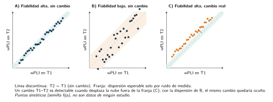
La figura 2.13 lo ilustra.
Bloque longitudinal. Resuelto: el wPLI de EEG es suficientemente fiable en sanos para estudios de varios años. Abierto: cuánto cambia el wPLI en EM en un año sin intervención, y si ese cambio supera el ruido de medida.
2.9 Limitaciones y heterogeneidad de la literatura
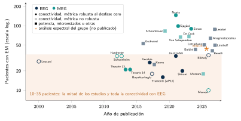
En la figura 2.14, tal como la compila el informe, algunas etiquetas de estudios se solapan (por ejemplo, las de Sjøgård y Simon en 2021–2023). Es un defecto del original que no se ha corregido, porque las figuras TikZ se copian sin editar; los datos de cada punto están en las tablas de la Sección 2.11.
- Muestras pequeñas. Entre 10 y 35 pacientes en la mitad de la matriz y en todos los estudios de conectividad con EEG (figura 2.14). Con estos tamaños, los efectos publicados tienden a inflarse (Button et al. 2013).
- Cohortes reutilizadas. Cuatro artículos de Ámsterdam proceden de la misma cohorte de 34 pacientes y 28 controles. Vecchio y Buyukturkoglu salen del mismo laboratorio, con el mismo protocolo, y Mórocz reanaliza los datos de Jouzizadeh (Mórocz et al. 2026). El número de muestras independientes es menor que el de artículos. Ese reanálisis, además, se hizo sin preprocesado, con grupos de edades distintas y eligiendo las variables sobre los mismos datos con los que se clasifica, algo que Van Schependom (2026) critica de forma explícita.
- Modalidad y espacio. MEG frente a EEG, fuentes frente a sensores y de 14 a 256 canales: un efecto en fuentes MEG no predice su tamaño en sensores EEG.
- Condición. Los estudios mezclan ojos abiertos (Vecchio et al. 2017; Buyukturkoglu et al. 2017; Jouzizadeh et al. 2021) y cerrados (Shirani y Mohebbi 2022; Tramonti et al. 2019; Tewarie et al. 2013; Linnhoff et al. 2026), y ninguno contrasta las dos condiciones en la misma cohorte de EM (sobre la diferencia, véase Barry et al. 2007).
- Métricas no comparables. Se ha visto en Sección 2.5, y se suma a que las bandas se definen de forma distinta: alfa como una banda de 8–13 Hz frente a alfa-1 y alfa-2, y beta como 13–30 Hz frente a tres sub-bandas.
- Inferencia. Unos estudios no corrigen por comparaciones múltiples (Shirani y Mohebbi 2022; Jouzizadeh et al. 2021); otros corrigen con máximos por permutación o FDR (Hardmeier et al. 2012; Sjøgård et al. 2021). Ninguno usa surrogates por sujeto.
- Clínica. Mezclan fenotipos y rangos de EDSS muy distintos (EDSS \le2 frente a 3,5–5,5), y casi ninguno ajusta por depresión o medicación.
El capítulo da tres rangos distintos para el tamaño de las muestras: «20 a 35» pacientes (idea clave y hueco), «entre 10 y 35» en la mitad de la matriz (punto 1) y «de 16 a 35» en los estudios de conectividad con EEG (pie de la figura 2.14). Con los datos de las tablas del propio capítulo (tabla 2.5 y tabla 2.6) los tres refieren subconjuntos distintos: los siete estudios de conectividad con EEG tienen entre 16 y 35 pacientes (16, 18, 20, 27, 28, 34 y 35), y catorce de las 25 filas de pacientes con EM con tamaño de muestra declarado (56 %; incluida la del análisis no publicado del grupo) tienen entre 10 y 35. El rango «20 a 35» de la idea clave es, por tanto, una aproximación: dos de esos siete estudios (16 y 18 pacientes) quedan por debajo. No se ha modificado ninguna cifra. observado
Pregunta de comprensión Cuatro artículos usan la misma cohorte de Ámsterdam. ¿Por qué no equivalen a cuatro réplicas independientes?
Porque cada artículo vuelve a analizar a los mismos participantes, con otra métrica o con otro subgrupo: si la cohorte tiene una peculiaridad (su fase de la enfermedad, su reclutamiento, un tamaño de muestra que infla el efecto), la heredan los cuatro. Contar artículos sobrestima el número de muestras independientes (figura 2.15). Esto afecta directamente a cómo leer la «evidencia más consistente» de la tabla por banda: el hallazgo de menos conectividad en alfa alta resiste al cambio de método, pero no está replicado entre cohortes; lo apoyan, con alfa como banda única, otras cuatro cohortes independientes. interpretación
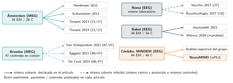
La figura 2.15 muestra el punto 2 de forma gráfica.
2.10 El antecedente más cercano
Hay tres candidatos, y cada uno lo es por un motivo distinto.
Por diseño: Shirani y Mohebbi (2022) (ficha 1).
- Qué hace. Registra EEG de reposo con ojos cerrados (32 canales, sensores) en EM remitente-recurrente frente a controles. Limpia con ICA (MARA e ICLabel) y calcula una métrica de fase robusta (coherencia imaginaria) y métricas de red. Es el diseño de registro más parecido al de MINDEM.
- Limitaciones declaradas. Tiene pocos canales, solo el fenotipo remitente-recurrente y una única sesión.
- Limitaciones inferidas provisional. Hay 20 pacientes y 18 controles, los p no están corregidos, los pacientes tienen más discapacidad (EDSS 3–4) y la red se umbraliza.
- Oportunidades para nuestro trabajo. Usar el wPLI en lugar de la coherencia imaginaria, añadir la condición de ojos abiertos y una segunda visita, corregir con FDR y usar surrogates por sujeto.
Por pregunta: Elkholy et al. (2026) (ficha 2). Es el estudio más reciente que combina, como NeuroMIND, EEG de reposo, una medida de fase, EM remitente-recurrente frente a controles y cognición, con una muestra algo mayor (35 y 35). El texto completo resuelve lo que el resumen dejaba abierto confirmado: 19 canales con referencia de orejas, 2 minutos limpios en épocas de 2 s, software comercial (NeuroGuide), sin declarar si los ojos están cerrados o abiertos, y p sin corregir. Su «retardo de fase» es el valor absoluto del ángulo de la coherencia, una métrica que no descarta la conducción de volumen. Los autores lo presentan como preliminar y piden expresamente repetirlo con la coherencia imaginaria o el wPLI, que es lo que hace NeuroMIND.
Por datos: el análisis espectral del propio grupo (ficha 23). Sobre la misma cohorte MINDEM (44 EM remitente-recurrentes y 40 controles; 28 pacientes completan T1 y T2 tras tres meses de dieta MIND), el grupo (Galvao-Carmona et al., comunicación a congreso, junio de 2026; Espuny et al., en preparación) analiza la potencia relativa con ojos cerrados y abiertos. No encuentra diferencias globales entre EM y control en alfa ni en theta. Sí describe que, con ojos cerrados, más fatiga (D-FIS) va con menos alfa posterior y más theta, y que los pacientes que responden a la dieta siguen una trayectoria de alfa distinta provisional. No es un resultado revisado por pares; es el complemento espectral más directo de NeuroMIND, que aporta la parte de conectividad.
En el proyecto aparecen, con cifras distintas, poblaciones que el informe no distingue siempre:
- 44 pacientes y 40 controles (ficha 23): la cohorte del análisis espectral del propio grupo, de la que 28 pacientes completan T1 y T2.
- 44 pacientes en T1 y 30 en T2 con EDSS y D-FIS (duda COH-01): la base clínica recibida.
- 41 pacientes y 36 controles en el conjunto de datos EEG del proyecto (77 sujetos), con 28 pares T1–T2 completos; y 41 pacientes con EDSS y D-FIS en T1 y 29 en T2 en el documento clínico unificado, que solo incluye a los sujetos con EEG (véase la nota del capítulo 1).
Las diferencias (por ejemplo, 44 frente a 41 pacientes) pueden deberse a que una cifra cuente a los reclutados y otra a los que tienen registro EEG válido, pero el informe no lo explica y no se ha podido resolver con la documentación disponible. No se han unificado las cifras. pendiente
El grupo de Sevilla que colabora en MINDEM ha publicado, además, EEG en EM con tarea: perfiles de EEG cuantitativo en EM benigna y remitente-recurrente (Vazquez-Marrufo et al. 2008), parámetros conductuales y de EEG ligados a la EDSS (Vázquez-Marrufo et al. 2019) y actividad de fase y no fase en alfa y gamma (Vazquez-Marrufo et al. 2020; Sarrias-Arrabal et al. 2021). No entran en la matriz porque no son de reposo, pero comparten equipo de registro (BrainProducts) y enfoque individual. El efecto bioquímico de la dieta MIND en la misma cohorte está en Navarrete-Pérez et al. (2024).
2.11 Tabla resumen de la evidencia
Los tabla 2.5 y tabla 2.6 resumen la matriz. Cada fila remite a su ficha de Sección 2.16.
| Estudio | Muestra | Registro | Métrica | Hallazgo principal | Clínica | Ficha |
|---|---|---|---|---|---|---|
| Shirani y Mohebbi (2022) | 20 EMRR / 18 C | 32 can., EC | Coh. imag., DTF, grafo | \uparrow eficiencia y transitividad (delta, theta, beta); \uparrow diámetro alfa; pico alfa \downarrow | EDSS 3–4 | ficha 1 |
| Elkholy et al. (2026) | 35 EMRR / 35 C | 19 can., orejas; condición n. c. | Coherencia, ángulo de fase | \downarrow coherencia alfa y beta interhemisférica; \uparrow ángulo de fase beta (sin corregir) | PASAT, EDSS | ficha 2 |
| Tramonti et al. (2019) | 16 EM, sin C; long. | 64 can., EC | wPLI alfa, wSMI | wPLI alfa basal predice mejora motora | TUG, DGI | ficha 3 |
| Jouzizadeh et al. (2021) | 34 EMRR / 34 C | 19 can., EO; fuentes | Coh. retardada, grafo | \downarrow centralidad y mundo pequeño en alfa | — | ficha 5 |
| Vecchio et al. (2017) | 27 EMRR (11 C) | 23/64 can., EO; fuentes | Coh. retardada, mundo pequeño | Mundo pequeño beta-1 sensorial izquierdo crece con la fatiga | mFIS, BDI | ficha 6 |
| Buyukturkoglu et al. (2017) | 18 EMRR / 11 C | 19 can. bipolar, EO | Coherencia homóloga | \uparrow coherencia beta temporo-parietal, crece con la fatiga | mFIS | ficha 7 |
| Leocani (2000) | 28 EM / 22 C | 20 can. | Potencia, coherencia | \uparrow theta; \downarrow coherencia theta y alfa | Cognición, lesiones | ficha 8 |
| Keune et al. (2017) | 25 EM | n. c. | Potencia, theta/beta | \uparrow alfa y theta/beta con peor SDMT | SDMT, TAP | ficha 18 |
| Benelli et al. (2026) | 41 EMRR / 21 C | 61 can., EO | Potencia | \uparrow theta frontocentral con fatiga | FSS | ficha 19 |
| Gschwind et al. (2016) | 53 EMRR / 49 C | 256 can., EC | Microestados | Clases A y B más largas; predicen evolución, EDSS y fatiga cognitiva | EDSS, FSMC | ficha 27 |
| Baldini et al. (2024) | 43 EMRR / 24 C | hd-EEG, 204 can. | Microestados | \downarrow microestado F (saliencia) con fatiga | MFIS | ficha 20 |
| Linnhoff et al. (2026) | 50 EM / 36 C (+33 COVID) | 14 can., EC | Exponente aperiódico | Exponente frontal \downarrow con fatiga cognitiva | Fatiga cognitiva | ficha 21 |
| Anagnostopoulou et al. (2026) | 64 EM / 46 C | 128 can., EC; fuentes | Potencia (alfa-1 y alfa-2) | \downarrow alfa-2 en EM (FDR); media reserva cognitiva y fluidez semántica | Reserva, fluidez | ficha 24 |
| Grupo MINDEM (no publicado) | 44 EMRR / 40 C; long. | 32 can., EC y EO | Potencia relativa | Sin diferencias globales; fatiga: \downarrow alfa posterior, \uparrow theta | D-FIS, EDSS, SDMT | ficha 23 |
Fichas provisionales (solo resumen): 8 y 18. «n. c.»: no consta en lo leído. Lectura de los textos el 6 de octubre de 2026; la ficha 27, el 8 de octubre.
| Estudio | Muestra | Registro | Métrica | Hallazgo principal | Clínica | Ficha |
|---|---|---|---|---|---|---|
| Tewarie et al. (2013) | 21 EMRR / 17 C | 151 can., EC; fuentes | PLI | \downarrow alfa-2, \uparrow beta; beta con la EDSS | EDSS, tálamo | ficha 4 |
| Hardmeier et al. (2012) | 34 EMRR / 28 C | 151 can., EC | Verosimilitud de sincronización, centralidad | \uparrow centralidad parietal theta; \downarrow temporal alfa alta y beta | Cognición | ficha 9 |
| Schoonheim et al. (2013) | 34 EM / 28 C | MEG, reposo | Verosimilitud de sincronización, grafo | \uparrow theta, alfa baja y beta; \downarrow alfa alta | Cognición | ficha 10 |
| Tewarie et al. (2014) | 21 EM / 17 C | Fuentes | PLI, árbol de expansión mínima | \downarrow integración alfa-2 y beta; \uparrow theta | Cognición | ficha 11 |
| Nauta et al. (2021) | 146 EM; 100 long. (5 años) | Fuentes | PLI, árbol de expansión mínima | Topología beta y delta predice declive cognitivo | Cognición | ficha 12 |
| Sjøgård et al. (2021) | 99 EM / 47 C | 306 can.; fuentes | Correlación de envolventes ortogonalizada | Red sensoriomotora con la EDSS; \downarrow red por defecto en alfa | EDSS, fatiga cognitiva | ficha 13 |
| Cover et al. (2006) | EMRR / C | EC | Coherencia interhemisférica | \downarrow sincronía interhemisférica alfa | — | ficha 14 |
| Memon et al. (2026) | 10 EM / 7 C | EO, EC y SDMT | Coherencia | \downarrow interhemisférica alfa y beta en reposo | Fatiga alta | ficha 15 |
| Schoonhoven et al. (2019) | 83 EM / 34 C | EC; fuentes | Potencia, frecuencia del pico | \uparrow theta y alfa-1 con deterioro cognitivo; pico más lento | Cognición | ficha 16 |
| Van Schependom et al. (2021) | 67 EM / 47 C | EC; parcelas | Potencia | Alfa baja de la unión temporoparietal \uparrow con atrofia | Memoria de trabajo | ficha 17 |
| Simon et al. (2023) | 90 EM, sin C | 306 can., EC; fuentes | Potencia, PLI, AECc | Deterioro cognitivo: lentificación y \downarrow PLI gamma parietal; PLI global sin cambios | Cognición, validez | ficha 25 |
| Mazzara et al. (2025) | 18 EM / 20 C | EC; fuentes y tractografía | Espectro y modelo de retardos | Las lesiones alargan los retardos; su peso sigue a la potencia alfa (r=-0{,}83) | EDSS | ficha 26 |
| Hardmeier et al. (2014) | 44 sanos; 35 long. | EEG 256 can., EC | PLI, wPLI | CCI global de 0,68 a 0,80 a 1 y 2 años | — | ficha 22 |
Fichas provisionales: 10, 11, 14, 16 y 22. Los estudios 4, 9 y 10 comparten cohorte (Ámsterdam).
- La nota de la tabla de EEG indica como provisionales las fichas 8 y 18, y la de MEG las 10, 11, 14, 16 y 22. Falta la ficha 23 (análisis del propio grupo), que también es provisional; con ella son las 8 fichas provisionales y 19 las confirmadas, como dice la Sección 2.1.
- La nota de la tabla de MEG dice que «los estudios 4, 9 y 10 comparten cohorte (Ámsterdam)», pero el texto y la figura 2.15 hablan de cuatro artículos de esa cohorte; el cuarto es la ficha 11 (Tewarie et al. (2014), con un subconjunto de 21 pacientes y 17 controles). Se conserva la nota original.
2.12 Hueco de investigación y posicionamiento de NeuroMIND
- Estado del campo. Una treintena de estudios de EEG y MEG de reposo en EM, la mayoría con MEG de fuentes y muestras de 20 a 35 pacientes. Coinciden en que la conectividad cambia según la banda: alfa alta baja, beta sube y theta no tiene un signo estable.
- Antecedente más cercano. Por diseño, Shirani y Mohebbi (2022); por pregunta, Elkholy et al. (2026); por datos, el análisis espectral de MINDEM.
- Ya no es novedoso. Que la EM altere la conectividad de reposo en alfa y beta; estudiarla con grafos; usar el PLI con MEG; relacionar la conectividad con la cognición.
- Poco estudiado (el hueco).
- El wPLI de EEG en sensores con controles: el único estudio con wPLI en EM no tiene controles, y el de Elkholy usa el ángulo de la coherencia, que no es robusto a la conducción de volumen.
- Un seguimiento natural de alrededor de un año con EEG, junto a la fiabilidad del wPLI.
- Ojos cerrados y abiertos en la misma cohorte, con su contraste.
- La inferencia por sujeto con surrogates y FDR.
- La fatiga medida con D-FIS como variable continua.
- Un pipeline abierto y auditable (BIDS, Julia), en lugar de software cerrado.
- Lo que dice Scopus. La cadena que combina PLI, wPLI, PLV o coherencia imaginaria con EEG o MEG y EM (desde 2023) devuelve un solo artículo, y es de TMS-EEG sin métrica de fase (Leodori, Mancuso, et al. 2026). En título, resumen y palabras clave no hay, por tanto, ningún estudio reciente de casos y controles con PLI o wPLI de EEG de reposo en EM confirmado. La afirmación se limita a esos términos: un artículo que hable solo de «fase» o «sincronía», como Elkholy et al. (2026), no aparece con ellos.
- Lo que dice PubMed. La misma comprobación, sin el corte de 2023 y entre 2015 y octubre de 2026, con la frase exacta weighted phase lag index y esclerosis múltiple, devuelve un único artículo: Tramonti et al. (2019). No añade un caso-control con wPLI de EEG de reposo. confirmado
- Riesgos de novedad y búsquedas pendientes. Falta Web of Science, y puede haber estudios en IEEE, en otras lenguas o como preprint. Sigue pendiente el texto completo de Leocani (2000). Van Schependom et al. (2019), citado por Van Schependom et al. (2021) a propósito de la potencia delta, está localizado (Human Brain Mapping, 2019). El resumen no dice si la señal es EEG o MEG ni menciona esa potencia delta: no entra en la matriz hasta leer el texto. pendiente
El primer punto habla de «una treintena de estudios». La matriz de evidencia tiene 27 fichas, y de ellas 25 son estudios en EM: la ficha 22 es un estudio de fiabilidad en sanos (Hardmeier et al. (2014)) y la 23, el análisis no publicado del propio grupo. El informe no dice qué trabajos completan la treintena (por ejemplo, los que se citan sin ficha, como el resumen de Babiloni et al. (2016)). Conviene distinguir el número de estudios citados en la narrativa del número de fichas documentadas. No se ha modificado la cifra. pendiente
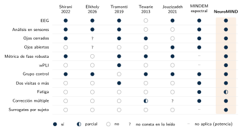
COH-01); Elkholy 2026 mide fase con el ángulo de la coherencia, no con una métrica robusta. Figura TikZ propia del informe original.
2.13 Hipótesis
Cronología honesta. H1–H3 vienen de la versión anterior del cap. 1, escrita antes del análisis de cohorte. Las expectativas de dirección por banda que se añaden aquí proceden de este estado del arte, redactado el 6 de octubre de 2026, después de conocer los resultados de los caps. 15 y 16 del informe original, igual que H4 y H5. Por eso no cuentan como predicciones confirmatorias.
H1 (principal, transversal). Con ojos cerrados, los pacientes con EM mostrarán diferencias frente a los controles en las matrices wPLI, especialmente en alpha y theta. provisional
Qué apoya la literatura. Que haya diferencias en alfa; que su signo dependa de la sub-banda (alfa alta, menos conectividad; alfa baja, más); que theta cambie con un signo que no se puede predecir. El contraste es por tanto bilateral y por banda, con FDR (cap. 15 del informe original).
H2 (exploratoria, longitudinal). Entre T1 y T2, separadas por 11–14 meses (COH-01), el wPLI de los pacientes puede cambiar. La literatura no permite predecir la dirección: no hay seguimientos naturales con EEG, y la fiabilidad del wPLI en sanos (CCI de 0,68 a 0,80) indica que solo un cambio grande superaría el ruido con la muestra pareada disponible provisional.
H3 (exploratoria, metodológica). Aplicar CSD antes del wPLI mejorará la especificidad espacial al reducir la conducción de volumen CONN-02. Es una hipótesis sobre el método, no sobre la enfermedad pendiente.
H4 (exploratoria, clínica). En los pacientes, más fatiga (D-FIS) se asociará a menos alfa posterior y más theta con ojos cerrados (potencia), y a más conectividad beta. La primera parte la apoyan Benelli et al. (2026) y el análisis espectral del grupo; la segunda, Buyukturkoglu et al. (2017) y Vecchio et al. (2017). Hay que ajustar por depresión (BDI-II) pendiente, a la espera de la base clínica (COH-01, COH-05, COH-07).
H5 (exploratoria, condición). La diferencia entre EM y control dependerá de la condición, ojos cerrados o abiertos, porque la reactividad alfa (Barry et al. 2007) es precisamente la banda alterada en la literatura. Ningún estudio de EM ha hecho este contraste en la misma cohorte provisional.
Pregunta de comprensión Las expectativas de dirección por banda de H1 salen del estado del arte, pero este se redactó después de ver los resultados de la cohorte. ¿Por qué eso importa?
Porque una hipótesis solo funciona como predicción confirmatoria si se formula antes de ver los datos que la pondrían a prueba. Aquí, la dirección esperada por banda (alfa alta con menos conectividad, beta con más, theta sin signo previsible) se escribió después de conocer los capítulos de análisis transversal y longitudinal, igual que H4 y H5; de ahí el recuadro de «cronología honesta». Contrastarlas con esos mismos datos puede servir para explorar, pero no para confirmar: la confirmación necesitaría datos nuevos o una especificación fijada de antemano. Por eso el capítulo las marca como provisionales y exploratorias. interpretación
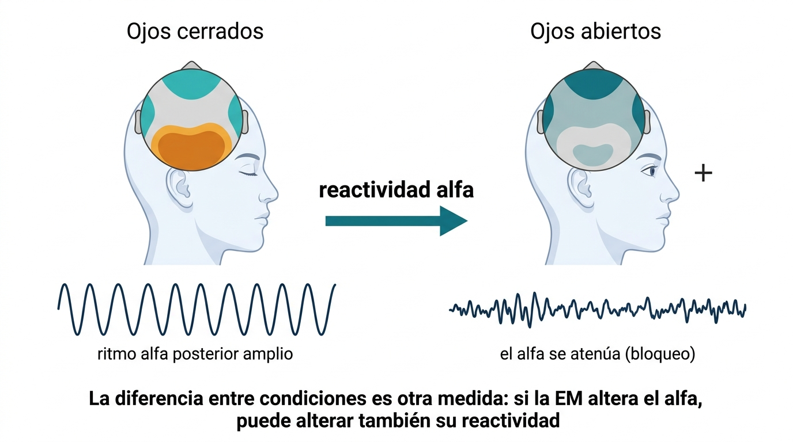
Procedencia y limitaciones de esta imagen
Procedencia. Ilustración conceptual generada con FigureLabs (IA generativa) el 6 de octubre de 2026 a partir de una descripción sin datos del estudio. Se conserva tal como se generó. No se envió ningún dato del estudio. Fuente: ficha de procedencia del informe original.
Limitaciones documentadas. El mapa topográfico (visto desde arriba, con la nariz arriba) aparece superpuesto a una cabeza de perfil; las zonas turquesa frontales y laterales del mapa con ojos cerrados no representan nada concreto; las trazas no están a escala y la de ojos cerrados es una sinusoide pura, más regular que un alfa real; el alfa no desaparece del todo con los ojos abiertos.
Licencia. Los términos de uso y los derechos de distribución de la imagen no están documentados en el informe: pendiente
Pregunta abierta. ¿En qué banda esperamos ver diferencias más claras entre EM y controles? La literatura apunta a alpha (8–12 Hz) como la banda de mayor modulación en reposo, y a theta (4–8 Hz) como correlato de procesamiento cognitivo. Este estado del arte afina la pregunta: alfa alta frente a alfa baja, y beta como tercera candidata (Sección 2.6). Con un solo sujeto de referencia no se podían contrastar; el análisis de grupo las contrasta en el cap. 15 del informe original.
Trazabilidad de H1–H5. La tabla 2.7 reordena lo que el capítulo ya dice; no añade evidencia ni resultados. «Observado» es lo que los estudios citados informan según el informe (cifras no contrastadas con los artículos); «interpretación» e «hipótesis» siguen la convención del libro. Los capítulos 15, 16 y 17 del informe original aún no están en el libro.
| Hipótesis y estado en el informe | Evidencia previa del capítulo | Observado frente a interpretado o hipótesis | Cuándo se formuló | Dónde se contrasta (informe original) |
|---|---|---|---|---|
| H1, principal, transversal provisional | Sección 2.6 y tabla 2.4: alfa alta con menos conectividad (Tewarie et al. 2013; Tewarie et al. 2014; Hardmeier et al. 2012; Schoonheim et al. 2013), todos MEG de la misma cohorte de Ámsterdam, y con alfa como banda única (Leocani 2000; Cover et al. 2006; Jouzizadeh et al. 2021; Elkholy et al. 2026); alfa baja con más (Schoonheim et al. 2013); theta sin signo estable. Sección 2.5 y Sección 2.12: la mitad de la evidencia usa métricas que no descartan el desfase cero y el único estudio con wPLI en EM no tiene controles (Tramonti et al. 2019) | observado diferencias de conectividad por banda en estudios previos, sobre todo MEG de fuentes, con muestras pequeñas y cohortes reutilizadas. hipótesis que el patrón aparezca en el wPLI de EEG de sensores. El hueco, sin caso-control con wPLI de EEG de reposo, se limita a los términos buscados en Scopus y PubMed | H1–H3, de la versión anterior del capítulo 1, escrita antes del análisis de cohorte. Las expectativas de dirección por banda se añadieron después de conocer los resultados: no son predicciones confirmatorias | Capítulo 15 (transversal): contraste bilateral y por banda, con FDR. Objetivo 2 |
| H2, exploratoria, longitudinal provisional | Sección 2.8 y figura 2.13: fiabilidad del wPLI en sanos, CCI de 0,68 a 0,80 (Hardmeier et al. 2014); seguimientos en EM casi todos con MEG (Nauta et al. 2021; Has Silemek et al. 2023); con EEG, solo dos sesiones separadas por dos semanas de entrenamiento (Tramonti et al. 2019) y el estudio de dieta del grupo (tres meses, espectral); conectoma alfa de un paciente menos parecido a sí mismo entre registros que el de un control (Cipriano et al. 2023) | observado fiabilidad en sanos y ausencia de seguimientos naturales con EEG. interpretación que solo un cambio grande superaría el ruido con la muestra pareada, y que la variabilidad intrasujeto podría ser mayor en EM. hipótesis que el wPLI cambie entre T1 y T2, sin dirección esperada | Antes del análisis de cohorte (versión anterior del capítulo 1); no se fijó dirección | Capítulo 16 (longitudinal). Objetivo 3. Intervalo T1–T2 de 11–14 meses (COH-01) |
| H3, exploratoria, metodológica pendiente | Sección 2.5: conducción de volumen (figura 2.6; (Nolte et al. 2004; Bastos y Schoffelen 2016; Chiarion et al. 2023)) y duda CONN-02 (el wPLI usa la referencia de adquisición, FCz; la literatura de EEG en EM usa otras, Sección 2.17). El capítulo no cita ningún estudio sobre el efecto del CSD |
observado el problema de la conducción de volumen, no el efecto del CSD. hipótesis que el CSD antes del wPLI mejore la especificidad espacial: es sobre el método, no sobre la enfermedad | Antes del análisis de cohorte (versión anterior del capítulo 1) | Objetivo 5 (sensibilidad a CSD, dwPLI y longitud de época): capítulo 17 |
| H4, exploratoria, clínica. Sin insignia propia: pendiente es el ajuste por BDI-II | Sección 2.7 (fatiga). Potencia: más theta frontocentral con fatiga (Benelli et al. 2026) y análisis espectral del grupo, no publicado y provisional: menos alfa posterior y más theta con ojos cerrados (ficha 23). Conectividad beta: coherencia temporo-parietal (Buyukturkoglu et al. 2017) y mundo pequeño beta-1 (Vecchio et al. 2017), que es el único que descarta la depresión. Dudas COH-01, COH-05 y COH-07 |
observado asociaciones con la fatiga en esos estudios, con escalas distintas del D-FIS (ninguno lo usa). Matices del propio capítulo: Benelli, Buyukturkoglu y Vecchio registran con ojos abiertos y H4 habla de ojos cerrados para la potencia; la coherencia no descarta el desfase cero (tabla 2.2). hipótesis la asociación con el D-FIS | Después de conocer los resultados de los capítulos 15 y 16 (cronología honesta): no confirmatoria | Objetivo 4 (D-FIS, EDSS y BDI-II), «cuando se integre la base clínica»; el objetivo no indica capítulo |
| H5, exploratoria, condición provisional | Sección 2.9, punto 4: estudios con ojos abiertos (Vecchio et al. 2017; Buyukturkoglu et al. 2017; Jouzizadeh et al. 2021) y cerrados (Shirani y Mohebbi 2022; Tramonti et al. 2019; Tewarie et al. 2013; Linnhoff et al. 2026), ninguno con los dos en la misma cohorte de EM. Reactividad alfa (Barry et al. 2007) y figura 2.17; alfa como banda alterada (tabla 2.4); análisis del grupo con ojos cerrados y abiertos (ficha 23) | observado la reactividad alfa en general y la alteración del alfa en EM según la literatura. hipótesis que la EM altere esa reactividad (el pie de la figura la plantea como posibilidad). El informe marca como provisional que ningún estudio de EM haya hecho este contraste en la misma cohorte | Después de conocer los resultados de los capítulos 15 y 16: no confirmatoria | Capítulo 15. Objetivo 2 (H1 y H5) |
Dos observaciones sobre la tabla. (1) H1–H3 son anteriores al análisis de cohorte, pero la dirección por banda de H1 y las hipótesis H4 y H5 enteras se formularon después de conocer los resultados; según el recuadro de «cronología honesta» del inicio de la sección, no cuentan como predicciones confirmatorias. (2) H1 nombra alfa y theta, pero la lectura de la tabla 2.4 destaca también beta (más conectividad, sobre todo con métricas de fase) y la «pregunta abierta» de esta sección la propone como tercera candidata; H1 no la nombra. Se conserva el texto original. observado
2.14 Objetivos
Objetivo general. Caracterizar la conectividad funcional de fase (wPLI) del EEG de reposo en esclerosis múltiple remitente-recurrente frente a controles, y su evolución entre dos visitas, con un pipeline abierto y trazable de principio a fin.
Objetivos específicos.
- Construir y verificar sobre un sujeto de referencia un pipeline reproducible, de BrainVision a BIDS y a matrices wPLI con surrogates (caps. 4–14 del informe original).
- Contrastar EM frente a control por arista y por banda, con ojos cerrados y abiertos (H1, H5; cap. 15 del informe original).
- Estimar el cambio T1–T2 en los pacientes (H2; cap. 16 del informe original).
- Relacionar la conectividad y la potencia con D-FIS, EDSS y BDI-II cuando se integre la base clínica (H4;
COH-01). - Medir la sensibilidad de los resultados a decisiones de método (CSD, dwPLI, longitud de época) (H3; cap. 17 del informe original).
2.15 Síntesis y preguntas para discutir
Lo que hay que llevarse del capítulo
- La literatura de EEG y MEG de reposo en EM describe una reorganización dependiente de la banda: alfa alta tiende a bajar, beta a subir y theta no tiene un signo estable.
- Ese patrón viene sobre todo de MEG, de muestras pequeñas, de cohortes reutilizadas y de métricas casi nunca comparables; que un estudio «confirme» a otro casi nunca es una réplica.
- El wPLI se calcula con la parte imaginaria del espectro cruzado: no da peso a la sincronía instantánea (conducción de volumen), a costa de no ver interacciones reales a desfases próximos a 0° o 180°.
- El hueco es el wPLI de EEG en sensores con controles, un seguimiento natural con EEG, las dos condiciones en la misma cohorte, la inferencia por sujeto con surrogates y la fatiga con D-FIS.
- Las hipótesis H1–H5 son exploratorias; las expectativas de dirección por banda se formularon después de ver los resultados de la cohorte.
Qué sigue abierto
Las preguntas siguientes no tienen una respuesta establecida en el informe ni en este libro. Para cada una se indica qué evidencia haría falta; no se ofrece una respuesta.
La literatura sugiere que las dos sub-bandas se mueven en direcciones opuestas y que una banda única puede anular los dos cambios; el estudio de EEG más grande con las sub-bandas separadas solo encuentra diferencia en alfa-2. Separarlas, sin embargo, multiplica los contrastes y, dado que las expectativas por banda se formularon a posteriori, abre la puerta a análisis flexibles. hipótesis pendiente
Qué evidencia haría falta: una decisión sobre las sub-bandas fijada antes de contrastar, y un análisis de sensibilidad que muestre cuánto cambia el resultado con una banda única y con dos; y definir qué límite superior de «alfa alta» (12 o 13 Hz) se usa.
Es la duda CONN-02, en curso. Una referencia común puede introducir sincronía instantánea en todos los canales, y el wPLI no le da peso, pero no se sabe cuánto cambia el resultado según la referencia. pendiente
Qué evidencia haría falta: recalcular el wPLI sobre los mismos registros con varias referencias y comparar las matrices por banda, y comprobar si H3 (el efecto del CSD) cambia con ello.
La fiabilidad publicada del wPLI (CCI de 0,68 a 0,80) es de sanos y a uno y dos años; en EM, el conectoma alfa de un paciente se parece menos a sí mismo entre registros que el de un control. hipótesis pendiente
Qué evidencia haría falta: una estimación de la variabilidad intrasujeto del wPLI en la propia cohorte (por ejemplo, entre mitades de un mismo registro) y un cálculo del cambio mínimo detectable con esa variabilidad y el tamaño de la muestra pareada.
2.16 Fichas de la matriz de evidencia
Una ficha por estudio, ordenadas por relevancia para NeuroMIND. Los campos son siempre los mismos. Las limitaciones declaradas son las que escriben los autores; las inferidas son nuestras y llevan provisional.
Cómo leer el nivel de lectura de cada ficha. En el informe, confirmado significa que se leyó el texto completo del artículo, provisional que solo se leyó el resumen (o que la fuente no está publicada) y pendiente que no hubo acceso. Ese nivel describe la lectura de los autores del informe. En este libro las fichas son una transcripción fiel del informe (comprobada con una prueba automática de cifras, referencias y fórmulas) y no se han contrastado de nuevo con los artículos originales.
EEG: antecedentes más cercanos
Ficha 1. Shirani y Mohebbi (2022) — antecedente por diseño confirmado
EEG · 32 canales · ojos cerrados · coherencia imaginaria y DTF · grafos
| Revista | Frontiers in Neuroscience 16:801774 (acceso abierto). PDF del grupo. |
| Muestra | 20 EM remitente-recurrente en remisión (EDSS 3–4: doce con 3, seis con 3,5, dos con 4) y 18 controles emparejados por edad y sexo. |
| Diseño | Transversal, una sesión. |
| Registro | EEG de 32 canales (g.HIamp, g.tec), 512 Hz, referencia en mastoides, reposo con ojos cerrados. |
| Preprocesado y espacio | EEGLAB: paso alto FIR a 0,5 Hz; ICA con MARA e ICLabel y reproyección de las componentes cerebrales (unas 16 por sujeto). Análisis en sensores. |
| Métrica | Coherencia imaginaria y función de transferencia dirigida (modelo autorregresivo multivariante, SIFT). |
| Bandas | Delta, theta, alfa, beta, gamma y banda ancha de 0,5 a 45 Hz. |
| Red | Umbral por componente conexa mínima; diámetro, eficiencia global y transitividad. |
| Variables clínicas | EDSS (solo para describir la muestra). |
| Estadística | Wilcoxon de suma de rangos, sin corrección por comparaciones múltiples. |
| Hallazgo principal | Potencia del pico alfa mayor en controles (p=0{,}0411); gamma mayor en EM (p=0{,}0503). Con la función de transferencia dirigida, diámetro mayor en EM en alfa (p=0{,}037). Con la coherencia imaginaria, eficiencia global (p=0{,}044) y transitividad (p=0{,}027) mayores en EM en banda ancha, y también en delta, theta y beta. Los autores lo leen como reacción compensatoria. |
| Limitaciones declaradas | Pocos canales; solo el fenotipo remitente-recurrente; una sola sesión por paciente. |
| Limitaciones inferidas | provisional Muestra pequeña; p sin corregir con muchas bandas y medidas; discapacidad mayor que la de una cohorte temprana; resultados de red dependientes del umbral. |
| Relevancia para NeuroMIND | Máxima en diseño: EEG con ojos cerrados, 32 canales en sensores, ICA y métrica de fase robusta. NeuroMIND usa el wPLI en lugar de la coherencia imaginaria, añade ojos abiertos, una segunda visita, FDR y surrogates. |
Ficha 2. Elkholy et al. (2026) — antecedente por pregunta confirmado
EEG · 19 canales · reposo · coherencia y ángulo de fase · cognición
| Revista | Multiple Sclerosis and Related Disorders 112:107327. PDF del grupo (2026-10-07). |
| Muestra | 35 EM remitente-recurrentes en remisión (19–45 años, 10 hombres; EDSS 2,2$1,9; 4$4 años de evolución) y 35 controles emparejados por edad y sexo. El 42,9 % de los pacientes tiene deterioro cognitivo y el 71,4 %, fatiga (sin escala). |
| Diseño | Transversal, casos y controles. |
| Registro | EEG de 19 canales 10–20 (Galileo, EBN), referencia en lóbulos enlazados, 512 Hz, 1–70 Hz y notch de 50 Hz; 5 minutos sin artefactos. La condición (ojos cerrados o abiertos) no consta. |
| Preprocesado y espacio | NeuroGuide 3.2.1: remuestreo a 256 Hz, 1–30 Hz, re-referencia a orejas enlazadas, rechazo automático y manual; 2 minutos limpios en épocas de 2 s, con fiabilidad partida >90\,\% y test-retest >95\,\%. Sensores. |
| Métrica | Coherencia (módulo al cuadrado del espectro cruzado normalizado, en %) y «retardo de fase»: el valor absoluto del ángulo de la función de coherencia, en grados (0–180°). No es el PLI ni el wPLI. Pares F3–F4, P3–P4, T3–T4, F3–P3, F3–T3, F4–P4, F4–T4 y media global de los 171 pares. |
| Bandas | Delta 1–4, theta 4–8, alfa 8–13, beta 14–30 Hz. |
| Variables clínicas | EDSS, RM (lesiones), PASAT, PALT, BVRT y P300. |
| Estadística | t o Mann–Whitney; Spearman con la clínica. Los p del cuadro están sin corregir; se menciona un umbral «más conservador» sin especificarlo. |
| Hallazgo principal | PASAT menor en EM (30,2 frente a 36,8; p=0{,}024). Coherencia interhemisférica menor en EM en casi todas las bandas, sobre todo alfa entre temporales (p=0{,}001) y entre parietales (p=0{,}005) y beta entre temporales (p=0{,}001); sin diferencias intrahemisféricas ni globales. Ángulo de fase mayor en EM en beta fronto-temporal izquierdo (p=0{,}002), fronto-parietal izquierdo (p=0{,}007), entre frontales (p=0{,}029) y entre temporales (p=0{,}010), y en el global alfa (p=0{,}036) y beta (p=0{,}028). PASAT con el ángulo beta fronto-temporal izquierdo (r=-0{,}626, p\le0{,}001) y con el theta global (r=-0{,}398, p=0{,}02). |
| Limitaciones declaradas | Transversal; métricas sensibles a la conducción de volumen, sin corrección por falta de medios; recomiendan la coherencia imaginaria o el wPLI en estudios futuros. Hallazgos preliminares. |
| Limitaciones inferidas | confirmado Pocos canales y referencia de orejas; condición sin declarar; comparaciones múltiples sin corrección explícita; ángulos medios muy dispersos (p. ej. 28,2$49,1° frente a 11,8$30°) y un ángulo de coherencia baja está mal definido. Además, un ángulo en una sola banda no estima un retardo: para eso hace falta la pendiente de la fase entre frecuencias (Chiarion et al. 2023). |
| Relevancia para NeuroMIND | Muy alta en pregunta, menor en método. Es el estudio más reciente que relaciona fase y cognición en EM con controles, pero no usa una métrica robusta a la conducción de volumen: NeuroMIND es la versión con wPLI, 31 canales, dos condiciones, FDR, surrogates y seguimiento que los propios autores reclaman. |
Ficha 3. Tramonti et al. (2019) — único wPLI en EM confirmado
EEG · 64 canales · ojos cerrados · wPLI alfa y wSMI · dos sesiones
| Revista | European Journal of Physical and Rehabilitation Medicine 55(6):743–753. PDF del grupo. |
| Muestra | 16 EM (14 remitente-recurrentes, 2 primarias progresivas; 10 mujeres; 51,4 años, rango 27–67; 15,1 años de evolución; EDSS 4,4, rango 3,5–5,5). Sin controles. |
| Diseño | Longitudinal observacional, antes (T0) y después (T1) de dos semanas de entrenamiento motor en circuito. Un sujeto sin EEG en T1. |
| Registro | EEG de alta densidad, 64 canales (Micromed), 256 Hz, 10 minutos de reposo con ojos cerrados en cada sesión. |
| Preprocesado y espacio | EEGLAB: 1–45 Hz, rechazo e interpolación esférica de canales, ICA y referencia promedio. Sensores. |
| Métrica | wPLI en alfa (8–12 Hz), elegido por la menor conectividad alfa descrita en EM; wSMI de banda ancha (1–45 Hz); potencia de Welch. |
| Red | Fuerza global, índices antero-posterior e interhemisférico; eficiencia global como área bajo la curva en cinco umbrales. |
| Variables clínicas | TUG, DGI, 10MWT, 6MWT, PCI, EDSS; carga lesional en RM (n=15). |
| Estadística | Correlaciones de Pearson y Spearman, ANCOVA con la edad; sin corrección global. |
| Hallazgo principal | La fuerza del wPLI alfa en T0 se correlaciona con la mejora en TUG (\rho=0{,}606, p=0{,}017), sobre todo en la dirección antero-posterior (p=0{,}038), y también la eficiencia (p=0{,}029, unilateral). El wSMI en T1 y su cambio siguen a la mejora (p=0{,}001 y p=0{,}005). La carga lesional no predice la mejora. |
| Limitaciones declaradas | N=16; sin grupo control; fenotipos mezclados; rango amplio de EDSS y de edad. |
| Limitaciones inferidas | provisional Solo alfa; dos semanas con intervención, no un seguimiento natural; no se describe la fiabilidad entre sesiones. |
| Relevancia para NeuroMIND | Alta: es el único estudio del corpus con wPLI de EEG en EM con ojos cerrados y dos sesiones. Muestra que el wPLI alfa tiene relevancia clínica, pero no aporta comparación con controles. |
MEG con métricas de fase
Ficha 4. Tewarie et al. (2013) confirmado
MEG · 151 canales · ojos cerrados · PLI · fuentes · redes de reposo
| Revista | PLoS ONE 8(7):e69318. Texto abierto (Europe PMC). |
| Muestra | 21 EM remitente-recurrentes y 17 controles, subconjunto de la cohorte de Hardmeier et al. (2012) tras exclusiones. |
| Registro | MEG de 151 canales (CTF); 3 minutos con ojos abiertos (no analizados) y 5 con ojos cerrados; cinco épocas de 6,55 s. |
| Preprocesado y espacio | Fuentes con un beamformer (SAM); 78 regiones del atlas AAL agrupadas en redes de reposo. |
| Métrica | PLI (Stam et al. 2007). |
| Bandas | Delta 0,5–4, theta 4–8, alfa-1 8–10, alfa-2 10–13, beta 13–30 y gamma 30–48 Hz. |
| Variables clínicas | EDSS, cognición, atrofia talámica y global, carga lesional. |
| Estadística | Mann–Whitney del PLI global; permutaciones por región; Spearman con la clínica. |
| Hallazgo principal | PLI global menor en EM en alfa-2 (U=89, p=0{,}008) y mayor en beta (U=94, p=0{,}012). En alfa-2 bajan la red por defecto (p=0{,}001) y la visual (p=0{,}01); el PLI alfa-2 visual sigue al volumen talámico (r=0{,}58). El PLI beta global se correlaciona con la EDSS (r=0{,}47, p=0{,}031) y el beta de la red por defecto, con peor cognición. |
| Limitaciones inferidas | provisional N pequeño; cohorte compartida con otros tres artículos; pocas épocas. |
| Relevancia para NeuroMIND | Muy alta: es el estimador antecesor del wPLI, en la misma condición. Origen del patrón «alfa alta menor, beta mayor». |
EEG en fuentes y otros EEG
Ficha 5. Jouzizadeh et al. (2021) confirmado
EEG · 19 canales · ojos abiertos · coherencia retardada · fuentes · grafos
| Revista | Brain Connectivity 11(5):359–367. PDF del grupo. |
| Muestra | 34 EM remitente-recurrentes (27,3$4,4 años; 18 mujeres) y 34 controles (25,1$7,5 años; 18 mujeres). Se excluyeron 4 pacientes por artefactos y se eliminaron 4 controles al azar para igualar los grupos. |
| Diseño | Transversal. |
| Registro | EEG de 19 canales 10–20 (Brainmaster Discovery24), 256 Hz, orejas enlazadas; 5 minutos con ojos abiertos, de los que se analiza 1 minuto (15 segmentos de 4 s). |
| Preprocesado y espacio | EEGLAB, FIR de 1 a 30 Hz, corrección ocular; fuentes con sLORETA en 84 regiones. |
| Métrica | Coherencia retardada (Pascual-Marqui). |
| Bandas | Delta 1,5–4, theta 4–8, alfa 8–13, beta-1 13–15, beta-2 15–18 y beta-3 18–25 Hz. |
| Red | Agrupamiento, intermediación, camino mínimo y propensión de mundo pequeño, en grafo ponderado. |
| Variables clínicas | No se analizan. |
| Estadística | Permutaciones (5000), \alpha=0{,}05; no consta corrección entre bandas y medidas. |
| Hallazgo principal | Las matrices medias no difieren. En alfa, la intermediación (t=2{,}623, p=0{,}011) y la propensión de mundo pequeño (t=2{,}189, p=0{,}036) son menores en EM; 7 regiones difieren en intermediación. |
| Limitaciones declaradas | 19 electrodos limitan la precisión de LORETA. |
| Limitaciones inferidas | provisional Un minuto de señal; solo ojos abiertos; sin clínica; sin corrección múltiple clara. |
| Relevancia para NeuroMIND | Alta: es el único EEG de reposo con unos 34 sujetos por grupo y grafos, y encuentra el efecto en alfa. |
Ficha 6. Vecchio et al. (2017) confirmado
EEG · 23 o 64 canales · ojos abiertos · coherencia retardada · fuentes · fatiga
| Revista | Neurorehabilitation and Neural Repair 31(1):56–64. PDF del grupo. |
| Muestra | 27 EM remitente-recurrentes (20 mujeres; 22–44 años), EDSS \le2, sin brotes en tres meses: 16 con fatiga alta (mFIS >35) y 11 con fatiga baja. 11 controles solo para comparar el efecto. |
| Diseño | Transversal, correlacional dentro de los pacientes. |
| Registro | EEG de 23 canales (Micromed, 1024 Hz; 18 pacientes) o de 64 (actiCHamp, 5 kHz remuestreado a 1024 Hz; 9 pacientes); referencia mediofrontal; 5 minutos con ojos abiertos. |
| Preprocesado y espacio | ICA semiautomática (ocular, cardiaca) sin rechazar épocas; fuentes con eLORETA en áreas de Brodmann agrupadas en cuatro redes (motora y sensorial, izquierda y derecha). |
| Métrica | Coherencia retardada. |
| Bandas | Delta 2–4, theta 4–8, alfa-1 8–10,5, alfa-2 10,5–13, beta-1 13–20, beta-2 20–30 y gamma 30–45 Hz. |
| Red | Agrupamiento y camino ponderados normalizados por la media de bandas; índice de mundo pequeño. |
| Variables clínicas | mFIS, BDI, EDSS. |
| Estadística | ANOVA de medidas repetidas (hemisferio, banda y grupo), post hoc de Duncan; Pearson con Bonferroni. |
| Hallazgo principal | Interacción hemisferio\timesbanda\timesgrupo (F(6,96)=1{,}90, p=0{,}012): más estructura de mundo pequeño con fatiga alta en alfa-2 y beta-1 de la red sensorial izquierda. La fatiga se correlaciona con el índice beta-1 sensorial izquierdo (r=0{,}404, p=0{,}020 en el resumen; r=0{,}41, p=0{,}030 en resultados). No hay correlación con el BDI. La fatiga baja queda entre los controles y la fatiga alta (F(2,36)=4{,}80, p=0{,}0146). |
| Limitaciones declaradas | Muestra pequeña; mFIS autoinformada; hemisferios analizados por separado. |
| Limitaciones inferidas | provisional Dos sistemas de EEG mezclados; solo ojos abiertos; normalización del mundo pequeño sin redes aleatorias; discrepancia interna en la cifra de la correlación. |
| Relevancia para NeuroMIND | Alta para la fatiga y para la métrica: la coherencia retardada es de la familia de la coherencia imaginaria. Comparte laboratorio con la ficha 7. |
Ficha 7. Buyukturkoglu et al. (2017) confirmado
EEG · 19 canales bipolares · ojos abiertos · coherencia · fatiga
| Revista | Clinical Neurophysiology 128(5):807–813. PDF del grupo. |
| Muestra | 18 EM remitente-recurrentes (12 mujeres; 24–47 años), EDSS \le2, mFIS 5–52; 11 controles emparejados. |
| Registro | EEG de 19 canales 10–20 (Micromed), 1024 Hz, referencia mediofrontal; 4 minutos o más con ojos abiertos, de los que se fijan 3 sin artefactos (180 épocas de 1 s). |
| Preprocesado y espacio | BrainVision Analyzer 2 e ICA semiautomática; derivaciones bipolares; Fz, Cz y Pz excluidos; sensores. |
| Métrica | Coherencia espectral de magnitud (Welch, Hanning de 1024 ms) entre 11 pares bipolares homólogos de los dos hemisferios. |
| Bandas | Theta 4–8, alfa 8–13 y beta 13–35 Hz, elegidas por su uso en neurofeedback. |
| Variables clínicas | mFIS, EDSS, BDI. |
| Estadística | Kruskal–Wallis entre controles, fatiga baja y fatiga alta, con Bonferroni por 11 pares; Mann–Whitney post hoc; Pearson con la mFIS. |
| Hallazgo principal | Coherencia beta temporo-parietal (F7-T7/F8-T8) mayor en EM con fatiga baja y alta que en controles (H=16{,}379, p=0{,}0002); se correlaciona con la mFIS (r=0{,}647; sin el valor atípico, r=0{,}620, p=0{,}00004). La coherencia fronto-frontal es mayor en EM en todas las bandas y sigue a la fatiga en beta (r=0{,}635) y theta (r=0{,}573). |
| Limitaciones declaradas | Fatiga medida solo con la mFIS autoinformada. |
| Limitaciones inferidas | provisional Coherencia de magnitud (atenuada por el montaje bipolar); solo ojos abiertos; N pequeño; posible solapamiento de pacientes con la ficha 6. |
| Relevancia para NeuroMIND | Alta para H4: la coherencia beta interhemisférica crece con la fatiga. |
Ficha 8. Leocani (2000) — antecedente clásico provisional
EEG · 20 canales · reposo · potencia y coherencia · cognición y RM
| Revista | Journal of Neurology, Neurosurgery & Psychiatry 69(2):192–198. Solo resumen. |
| Muestra | 28 EM clínicamente definida y 22 controles de edad y sexo comparables; RM en 27 y neuropsicología en 21. Fenotipo progresivo según Hardmeier et al. (2012). |
| Registro | EEG de 20 electrodos, referencia binaural, 10 minutos de reposo; épocas de 1 s. Condición: no consta en el resumen. |
| Métrica | Potencia (FFT) y coherencia. |
| Hallazgo principal | Más potencia theta frontotemporal-central (p<0{,}005); menos coherencia theta entre áreas homólogas (p<0{,}02) y menos coherencia alfa local y de larga distancia (p<0{,}0005), más marcadas con carga lesional subcortical alta y con afectación cognitiva. La coherencia interhemisférica theta (p=0{,}02) y alfa (p=0{,}017) y la antero-posterior alfa (p=0{,}013) se correlacionan con la carga lesional subcortical. |
| Relevancia para NeuroMIND | Alta: es el origen de la idea de que la EM desconecta en alfa y theta. Su métrica no es robusta al desfase cero. |
MEG
Ficha 9. Hardmeier et al. (2012) confirmado
MEG · 151 canales · ojos cerrados · verosimilitud de sincronización · centralidad
| Revista | PLoS ONE 7(7):e42087. Texto abierto (Europe PMC). |
| Muestra | 34 EM remitente-recurrentes tempranas (17 mujeres; 41,4$$8 años; 8,1 años de evolución; mediana de EDSS 2,0; cohorte de inicio, 5–7 años tras el diagnóstico) y 28 controles emparejados por edad, sexo y educación. |
| Registro | MEG de 151 canales (CTF), 625 Hz, 5 minutos con ojos cerrados; sensores. |
| Métrica | Verosimilitud de sincronización, que no es robusta al desfase cero; centralidad de vector propio por sensor. |
| Bandas | Delta 0,5–4, theta 4–8, alfa baja 8–10, alfa alta 10–13, beta 13–30 y gamma 30–48 Hz. |
| Variables clínicas | Batería BRB-N (SRT, SPART, SDMT, PASAT…), puntuación cognitiva global y RM. |
| Estadística | Permutaciones con estadístico máximo sobre sensores; FDR para las correlaciones con la cognición. |
| Hallazgo principal | En EM, más centralidad biparietal (theta) y menos temporal izquierda (alfa alta, beta). Peor cognición con menos centralidad temporal izquierda (alfa baja) y derecha (beta), y más centralidad parieto-temporal derecha (beta). Efectos más marcados en varones. |
| Limitaciones inferidas | provisional Métrica sensible a la fuga de campo; cohorte compartida con las fichas 4, 10 y 11. |
| Relevancia para NeuroMIND | Media-alta: es el patrón de hubs y cognición. Resume como antecedentes a Leocani (2000) y Cover et al. (2006). |
Ficha 10. Schoonheim et al. (2013) provisional
MEG · reposo · verosimilitud de sincronización · grafos · cognición
| Revista | Human Brain Mapping 34(1):52–61. Solo resumen. |
| Muestra | 34 EM y 28 controles emparejados (cohorte de Ámsterdam). |
| Métrica | Verosimilitud de sincronización y teoría de grafos. |
| Hallazgo principal | En EM, más sincronización en theta, alfa baja y beta y menos en alfa alta. Red más regular en alfa baja (camino y agrupamiento mayores). En el modelo con clínica, RM y MEG, solo el agrupamiento en alfa baja predice el deterioro cognitivo. Más marcado en varones. |
| Relevancia para NeuroMIND | Media: muestra que alfa baja y alfa alta van en direcciones opuestas. |
Ficha 11. Tewarie et al. (2014) provisional
MEG · fuentes · PLI · árbol de expansión mínima · cognición
| Revista | NeuroImage 88:308–318. Solo resumen. |
| Muestra | 21 EM tempranas y 17 controles emparejados por edad, sexo y educación. |
| Métrica | PLI entre regiones (beamformer) y árbol de expansión mínima. |
| Hallazgo principal | Menos integración global en alfa-2 (10–13 Hz) y beta (13–30 Hz) y más en theta; en alfa-2, pérdida de jerarquía asociada a peor cognición. |
| Relevancia para NeuroMIND | Media: el árbol de expansión mínima es una alternativa a los umbrales para resumir la red, útil si se pasa a ROIs (CONN-01). |
Ficha 12. Nauta et al. (2021) — valor pronóstico confirmado
MEG · fuentes · PLI · árbol de expansión mínima · seguimiento a 5 años
| Revista | Multiple Sclerosis Journal 27(11):1727–1737. Texto abierto (Europe PMC). |
| Muestra | 146 EM con MEG basal; 100 con neuropsicología a 5 años; 60 controles usados solo para normalizar las puntuaciones cognitivas. |
| Diseño | Longitudinal predictivo. |
| Registro y espacio | MEG de reposo; fuentes (beamformer, 78 regiones AAL). |
| Métrica | PLI; árbol de expansión mínima binarizado. |
| Hallazgo principal | Una red beta más integrada (menor diámetro) y una delta menos integrada (menor fracción de hojas) predicen el declive cognitivo a 5 años (R^2_{\text{adj}}=15\,\%), independientemente del daño estructural. En el corte transversal, una red menos integrada acompaña a peor cognición en todas las bandas. |
| Limitaciones declaradas | Progresión leve de la cohorte. |
| Relevancia para NeuroMIND | Alta para H2: la topología de fase tiene valor pronóstico. |
Ficha 13. Sjøgård et al. (2021) confirmado
MEG · 306 canales · fuentes · correlación de envolventes ortogonalizada · redes de reposo
| Revista | Human Brain Mapping 42(3):626–643. Texto abierto (Europe PMC). |
| Muestra | 99 EM analizados (de 100 reclutados: 85 remitente-recurrentes, 15 progresivos; EDSS \le6{,}5; 18–60 años) y 47 sanos. |
| Registro y espacio | MEG de 306 canales (Elekta); fuentes con ortogonalización por pares contra la fuga espacial. |
| Métrica | Correlación de envolventes de potencia, dentro de cada banda y entre bandas. |
| Variables clínicas | EDSS, duración, siete pruebas neuropsicológicas, fatiga cognitiva. |
| Estadística | Corrección estricta de comparaciones múltiples y de confusores. |
| Hallazgo principal | Desconexiones de la red sensoriomotora ligadas a la EDSS y de la red del lenguaje (beta) ligadas a la duración. Conectividad alfa reducida dentro de la red por defecto y entre ella y otras redes. Añadir la conectividad MEG a un modelo con tálamo y lesiones aumenta la varianza explicada de la fluidez verbal y de la fatiga cognitiva. |
| Limitaciones declaradas | Análisis restringido a redes de reposo predefinidas. |
| Relevancia para NeuroMIND | Alta: es la cohorte grande con corrección estricta, y muestra el valor añadido de la conectividad frente a la RM. |
Ficha 14. Cover et al. (2006) provisional
MEG · ojos cerrados · coherencia interhemisférica
| Revista | NeuroImage 29(3):783–788. Solo resumen. |
| Muestra | EM remitente-recurrentes y controles; N no consta en el resumen. |
| Hallazgo principal | La medida de coherencia interhemisférica baja en EM, sobre todo en alfa, sin diferencias de potencia alfa. Es reproducible en controles durante más de 15 meses. |
| Relevancia para NeuroMIND | Media: desconexión interhemisférica alfa sin cambio de potencia, y un dato temprano de reproducibilidad. |
Ficha 15. Memon et al. (2026) confirmado
MEG · ojos abiertos, ojos cerrados y SDMT · coherencia · piloto y revisión
| Revista | Brain Sciences 16(8):862. Texto abierto (Europe PMC). |
| Muestra | 10 EM con fatiga alta y 7 controles. |
| Registro | MEG, 10 minutos con ojos abiertos y 10 con ojos cerrados, más un SDMT adaptado. |
| Métrica | Coherencia de magnitud al cuadrado en fuentes. |
| Hallazgo principal | En reposo, menos coherencia interhemisférica en alfa y beta, con aumentos regionales fronto-parietales y parieto-occipitales en alfa. Durante el SDMT, más coherencia theta y gamma, que se interpreta como compensación. La revisión de 44 estudios MEG describe una disconectividad dependiente de la frecuencia. |
| Limitaciones declaradas | Muestra muy pequeña; sin corregistro con RM individual; la coherencia no elimina la fuga a desfase cero, y se recomiendan la coherencia imaginaria o el wPLI. |
| Relevancia para NeuroMIND | Media: justifica de forma explícita el wPLI y el contraste por estado. |
Potencia espectral
Ficha 16. Schoonhoven et al. (2019) provisional
MEG · ojos cerrados · potencia relativa y frecuencia del pico · cognición
| Revista | Multiple Sclerosis Journal 25(14):1896–1906. Solo resumen. |
| Muestra | 83 EM y 34 controles. |
| Métrica | Frecuencia del pico y potencia relativa en seis bandas, en 78 áreas corticales y 10 de sustancia gris profunda. |
| Hallazgo principal | Más potencia alfa-1 y theta, muy asociada al deterioro cognitivo. Los pacientes con deterioro difieren de los controles en las cortezas parietotemporales y tienen un pico más lento. La lentificación también aparece en el tálamo. |
| Relevancia para NeuroMIND | Alta para el cap. 12: describe la lentificación en theta y alfa-1. |
Ficha 17. Van Schependom et al. (2021) confirmado
MEG · ojos cerrados · potencia · atrofia
| Revista | NeuroImage: Clinical 30:102632. Texto abierto (Europe PMC). |
| Muestra | 67 EM (EDSS \le6; 18–60 años) y 47 sanos emparejados. |
| Registro | MEG de 10 minutos con ojos cerrados, 1 kHz; espectro por parcelas con resolución de 0,25 Hz; volumetría por RM. |
| Hallazgo principal | Sin diferencias de potencia global entre grupos (alfa alta con tendencia a ser mayor en sanos, p=0{,}05 sin corregir). En EM, más atrofia y carga lesional y menor tálamo van con más alfa baja (8–10 Hz) en la unión temporoparietal, que se asocia a peor memoria de trabajo. Un cociente alfa baja/alfa alta mayor acompaña a menor velocidad de procesamiento. |
| Limitaciones declaradas | Posible somnolencia con ojos cerrados. |
| Relevancia para NeuroMIND | Alta: justifica separar alfa baja y alfa alta, cosa que el pipeline no hace (una sola banda ALPHA de 7,8–11,7 Hz). |
Ficha 18. Keune et al. (2017) provisional
EEG · reposo · potencia alfa y cociente theta/beta · velocidad de procesamiento
| Revista | Clinical Neurophysiology 128(9):1746–1754. Solo resumen. |
| Muestra | 25 EM; no constan controles en el resumen. |
| Hallazgo principal | Más alfa-1 y alfa-2 global y un cociente theta/beta frontal más alto acompañan a menor velocidad en el SDMT. Con alteración atencional clínica, el cociente theta/beta frontal es mayor y la alfa no discrimina. |
| Relevancia para NeuroMIND | Media: es el EEG de reposo con cognición y potencia. |
Fatiga
Ficha 19. Benelli et al. (2026) confirmado
EEG · 61 canales · ojos abiertos · potencia · fatiga multimodal
| Revista | Brain Communications 8(3):fcag134. Texto abierto (Europe PMC). |
| Muestra | 41 EM remitente-recurrentes (EDSS <4; 19 con fatiga, FSS \ge4, y 22 sin ella) y 21 controles. |
| Registro | EEG de 64 canales (61 tras limpieza), 256 Hz, ICA con ICLabel e interpolación esférica; además TMS, RM estructural y funcional, NfL, GFAP y citoquinas. |
| Hallazgo principal | Los pacientes con fatiga tienen más potencia theta frontocentral con ojos abiertos. Por TMS, menos facilitación intracortical; por RM funcional, más conectividad en la red por defecto; por difusión, menos anisotropía fraccional corticoespinal y callosa. La carga lesional no difiere. |
| Relevancia para NeuroMIND | Alta para H4 (fatiga y theta). Es uno de los antecedentes que cita el propio grupo. |
Ficha 20. Baldini et al. (2024) confirmado
EEG de alta densidad · 204 canales · reposo · microestados · fatiga
| Revista | Brain Topography 37(6):1203–1216. Texto abierto (Europe PMC). |
| Muestra | 43 EM remitente-recurrentes (con y sin fatiga según la MFIS) y 24 controles. |
| Registro | EEG de alta densidad, 15 minutos de reposo, 1–40 Hz, 204 electrodos analizados. |
| Métrica | Microestados con descomposición espectral. |
| Hallazgo principal | En los pacientes con fatiga, menos microestado F (red de saliencia) en banda ancha y beta, y más microestado B (visual) que en sanos. La fatiga cognitiva se predice con más B en delta y menos F en beta; la física, con menos F en beta. |
| Relevancia para NeuroMIND | Media: la fatiga deja huella en la dinámica de reposo, pero es una métrica distinta de la conectividad por pares. |
Ficha 21. Linnhoff et al. (2026) confirmado
EEG · 14 canales · ojos cerrados · exponente aperiódico · fatiga cognitiva
| Revista | Psychological Medicine 56:e21. Texto abierto (Europe PMC). |
| Muestra | 119 participantes: 36 controles, 33 con fatiga por COVID persistente y 50 EM (23 con fatiga, 27 sin ella). |
| Registro | EEG de 14 canales, al menos 3 minutos con ojos cerrados; multitaper de 1 a 90 Hz y FOOOF. |
| Hallazgo principal | Un exponente aperiódico frontal (F3, Fz, FCz) más bajo acompaña a más fatiga cognitiva. Las personas con fatiga, sea cual sea el diagnóstico, tienen el exponente frontal más bajo; el occipital no difiere. El exponente predice el estado de fatiga más allá de la edad y la depresión. |
| Relevancia para NeuroMIND | Media-alta: la fatiga también cambia el componente aperiódico, un confusor de la potencia por banda (Donoghue et al. 2020). |
Fiabilidad
Ficha 22. Hardmeier et al. (2014) — fiabilidad provisional
EEG · 256 canales · ojos cerrados · PLI y wPLI · seguimiento a 1 y 2 años
| Revista | PLoS ONE 9(10):e108648. Solo resumen (acceso abierto: leer el texto completo). |
| Muestra | 44 sanos, 35 con seguimiento al año y a los dos años. |
| Métrica | PLI y wPLI globales y regionales en sensores; agrupamiento y camino normalizados e índice de mundo pequeño, en theta, alfa-1, alfa-2 y beta. |
| Hallazgo principal | Variabilidad entre sujetos del PLI global de 0,12 a 0,28 y del wPLI de 0,25 a 0,55. Fiabilidad test-retest buena o excelente en el PLI y el wPLI globales (CCI de 0,68 a 0,80) y regionales (0,58 a 0,77); de regular a buena en las medidas de grafo (0,32 a 0,73), salvo el camino del wPLI en alfa-1 (CCI de 0,12). El wPLI se correlaciona débilmente con la distancia entre electrodos. |
| Relevancia para NeuroMIND | Alta para H2: fija el ruido de medida esperable en un contraste T1–T2. |
Análisis espectral del propio grupo (no publicado)
Ficha 23. Análisis espectral de MINDEM (grupo, no publicado) provisional
EEG · 32 canales · ojos cerrados y abiertos · potencia relativa · fatiga y dieta
| Fuente | Comunicación a congreso de Galvao-Carmona, Espuny, Navarrete, Castro et al. (24 de junio de 2026); «Espuny et al., en preparación». No revisado por pares. |
| Muestra | 44 EM remitente-recurrentes (McDonald 2017, EDSS 0–6,5) y 40 controles, del Hospital Universitario Reina Sofía (Córdoba); 28 pacientes completan T1 y T2. |
| Diseño | Transversal en T1 y longitudinal tras tres meses de dieta MIND. |
| Registro | 32 canales activos, 500 Hz, referencia en el lóbulo derecho y re-referencia promedio. BrainVision Analyzer 2: notch de 50 Hz, paso alto de 0,5 y paso bajo de 30 Hz, Infomax extendida, épocas de 1 s y rechazo a \pm70 µV. |
| Métrica | Potencia relativa (FFT, Hamming) en delta, theta, alfa 8–12, beta baja, media y alta, por regiones frontal, central, parietal y occipital. |
| Variables clínicas | EDSS, SDMT, FDT, BDI-II, D-FIS (variable principal) y MSQOL-54. |
| Hallazgo principal | Sin diferencias globales entre EM y control en alfa ni en theta relativas, pero con interacciones de región y lateralidad. En EM, con ojos cerrados en T1, más fatiga va con menos alfa posterior y más theta (efecto de la fatiga en theta: F(1,26)=4{,}6, p=0{,}041). Respondedores y no respondedores siguen trayectorias de alfa distintas (F(1,26)=6{,}634, p=0{,}016). |
| Relevancia para NeuroMIND | Máxima: misma cohorte y mismo preprocesado de referencia (BrainVision). NeuroMIND aporta la conectividad de fase que este análisis no estudia. |
Nota editorial del libro. El informe presenta esta ficha como «misma cohorte y mismo preprocesado de referencia (BrainVision)». Conviene leer esas dos coincidencias con cautela. Las cifras de muestra (44 pacientes y 40 controles) no coinciden con las del conjunto de datos EEG del proyecto (41 pacientes y 36 controles con registro) ni con las de la duda COH-01 (44 pacientes en T1 y 30 en T2 con EDSS y D-FIS): son poblaciones distintas y la diferencia no está explicada en el informe. Además, este análisis espectral usa un preprocesado propio (paso bajo de 30 Hz, referencia promedio, épocas de 1 s), distinto del de NeuroMIND (paso bajo de 150 Hz y wPLI sobre la referencia de adquisición, véase CONN-02).
Fichas añadidas tras la búsqueda en Scopus (7 de octubre de 2026)
Ficha 24. Anagnostopoulou et al. (2026) — alfa-1 frente a alfa-2 confirmado
EEG · 128 canales · ojos cerrados · potencia en fuentes · reserva cognitiva
| Revista | Frontiers in Neuroscience 20:1869738 (acceso abierto). PDF del grupo. |
| Muestra | 64 EM (47 remitente-recurrentes y 17 progresivas, aunque los criterios de inclusión piden remitente-recurrente; EDSS 3,02$$1,65) y 46 controles emparejados por edad y sexo; los pacientes tienen 3,6 años menos de estudios. |
| Diseño | Transversal, dentro del ensayo MS-NEUROPLAST (NCT04806568). |
| Registro | EEG de alta densidad, 128 canales (Nihon Kohden, R-NET), 1000 Hz, 7 minutos con ojos cerrados y a oscuras. |
| Preprocesado y espacio | MNE-Python: FIR 1–100 Hz, notch; ICA Infomax con ICLabel; épocas de 4 s con Autoreject (media de 5,7 minutos útiles). Fuentes con sLORETA en 6239 vóxeles; potencia relativa media de toda la corteza y por regiones de Brodmann. |
| Métrica | Potencia espectral relativa (no conectividad). |
| Bandas | Delta 1–4, theta 4–7,5, alfa-1 7,5–10 y alfa-2 10–13 Hz, separadas a propósito. |
| Variables clínicas | Índice de reserva cognitiva (CRIq), fluidez verbal semántica y fonémica, MFIS, depresión (DASS-21), MSIS-29, EDSS. |
| Estadística | t o Mann–Whitney con FDR entre las cuatro bandas; regresiones con FDR; mediación con bootstrap (10 000). |
| Hallazgo principal | Solo alfa-2 difiere: menor en EM (t=-2{,}65, p_{\text{FDR}}=0{,}037, d=0{,}52); alfa-1, theta y delta no. Un 37,5 % de los pacientes queda por debajo de -1 DE de los controles. La alfa-2 media la relación entre reserva cognitiva y fluidez semántica (efecto indirecto 0,186, IC95 % 0,048–0,396), no la fonémica, y no en controles. |
| Limitaciones declaradas | Sin RM; modelo de cabeza estándar; regiones anatómicas gruesas; transversal; un único indicador de reserva. |
| Limitaciones inferidas | confirmado Fenotipos mezclados pese al criterio de inclusión; potencia global en fuentes, no comparable directamente con sensores. |
| Relevancia para NeuroMIND | Alta para la decisión de separar alfa baja y alta: con ojos cerrados, el efecto de grupo está solo en alfa-2, que la banda ALPHA única de NeuroMIND (7,8–11,7 Hz) mezcla con alfa-1 (figura 2.3). |
Ficha 25. Simon et al. (2023) — validez del rendimiento confirmado
MEG · 306 canales · ojos cerrados · potencia, PLI y AECc · fuentes · cognición
| Revista | Multiple Sclerosis Journal 29(8):1001–1011. PDF del grupo. |
| Muestra | 90 pacientes con EM y quejas cognitivas (66,7 % remitente-recurrentes; 47,3 años; 12,3 años de evolución), divididos en 42 con deterioro cognitivo, 30 preservados y 18 con rendimiento subóptimo en un test de validez. Sin controles sanos. |
| Diseño | Transversal, cohorte clínica (Ámsterdam, SOMSCOG). |
| Registro | MEG de 306 canales (Elekta), reposo con ojos cerrados; 10 épocas de 13,1 s (5 sin somnolencia para la potencia). |
| Preprocesado y espacio | tSSS; beamformer sobre 78 regiones corticales y 12 de sustancia gris profunda (AAL); medias global, por lóbulo y por región. |
| Métrica | Potencia relativa y frecuencia del pico; PLI (40 épocas de 3,28 s) y correlación de envolventes corregida (AECc). |
| Bandas | Delta 0,5–4, theta 4–8, alfa-1 8–10, alfa-2 10–13, beta 13–30 y gamma 30–48 Hz. |
| Variables clínicas | Batería MACFIMS, test de validez del rendimiento (ASTM), EDSS, RM. |
| Estadística | Regresión con edad y sexo, Bonferroni por familia (espectro \alpha=0{,}007; PLI 0{,}008; AECc 0{,}0125); permutaciones con máximo por región. |
| Hallazgo principal | Con deterioro cognitivo hay lentificación: más theta frontal (p=0{,}003) y talámica (p=0{,}002), menos alfa-2 occipital (p=0{,}002) y menos beta talámica (p=0{,}007). El PLI gamma parietal es menor que en los preservados (p=0{,}001); el PLI global no difiere entre deteriorados y preservados tras la corrección (sí el gamma cortical frente a los subóptimos, p=0{,}002) y la AECc no muestra diferencias. Los de rendimiento subóptimo se parecen a los preservados, aunque el 83 % se habría clasificado como deteriorado. |
| Limitaciones declaradas | Grupo subóptimo pequeño, un único test de validez, resolución limitada en estructuras profundas, benzodiacepinas no controladas. |
| Limitaciones inferidas | confirmado Sin controles: compara pacientes entre sí. Valores de PLI muy próximos entre grupos (diferencias de milésimas). |
| Relevancia para NeuroMIND | Media: confirma con PLI y con ojos cerrados que la conectividad de fase global apenas separa grupos y que la cognición se ve antes en el espectro. Advierte de que una parte de los «deteriorados» puede no serlo, algo a vigilar cuando se crucen wPLI y cognición. |
Ficha 26. Mazzara et al. (2025) — lesiones y retardos confirmado
MEG · ojos cerrados · fuentes · modelo de cerebro completo · retardos de conducción
| Revista | Human Brain Mapping 46(7):e70219 (acceso abierto). PDF del grupo. |
| Muestra | 18 EM (EDSS 4,5$$1,9; 187,7 meses de evolución) y 20 controles (cuidadores y parejas), emparejados por edad y sexo. |
| Diseño | Transversal, modelado. |
| Registro | MEG, dos tramos de 3,5 minutos con ojos cerrados, 1024 Hz, 0,5–48 Hz; RM con tractografía y mapa de lesiones por tracto. |
| Preprocesado y espacio | PCA e ICA; beamformer LCMV en 84 regiones del atlas DKT. |
| Métrica | Espectro de potencia (pico alfa, amplitud y área). Modelo de osciladores de Stuart–Landau acoplados por el conectoma de cada sujeto, con retardo \tau_{jk}=d_{jk}/v_{jk}+\gamma\,l_{jk}, donde l_{jk} es la fracción lesionada del tracto y \gamma el peso de las lesiones; \gamma se infiere con inferencia basada en simulación. |
| Variables clínicas | EDSS, SDMT, FSS, BDI, carga lesional. |
| Hallazgo principal | Menos potencia alfa y pico alfa desplazado en EM (cualitativo, sin estadístico de grupo). Al subir \gamma (lesiones que alargan más los retardos) el pico alfa baja y se desplaza. El \gamma inferido se correlaciona con la potencia alfa (r=-0{,}83), pero la carga lesional total no se correlaciona con el pico (r=0{,}00) ni con \gamma (r=-0{,}38, p=0{,}12): importa dónde están las lesiones, no cuántas. Añadir \gamma mejora la predicción de la EDSS sin llegar a ser significativo. |
| Limitaciones declaradas | Solo modela retardos (no la neurodegeneración); la conducción de volumen residual en fuentes; validación longitudinal pendiente. |
| Limitaciones inferidas | confirmado N pequeño; resultado espectral de grupo sin contraste estadístico; modelo con muchos supuestos. |
| Relevancia para NeuroMIND | Alta como mecanismo: es la primera estimación, paciente a paciente, de cómo las lesiones alargan los retardos de conducción, que es el puente entre la desmielinización y la fase (figura 2.7). No mide conectividad de fase. |
Ficha añadida tras la comprobación en PubMed (8 de octubre de 2026)
Ficha 27. Gschwind et al. (2016) — microestados confirmado
EEG · 256 canales · ojos cerrados · microestados · clínica
| Revista | NeuroImage: Clinical 12:466–477. Texto abierto (PMC5011177), leído el 8 de octubre de 2026. |
| Muestra | 53 EM remitente-recurrentes (EDSS \le 4, media 2,2; 9,99 años de evolución; 45 mujeres; diestros) y 49 controles diestros. |
| Registro | EEG de 256 canales, 12 minutos sentados con ojos cerrados, 1 kHz, referencia en el vértice. Se analizan 204 electrodos, 1–40 Hz, re-referencia promedio; al menos 5 minutos sin artefactos. ICA Infomax para el artefacto cardíaco y ocular. Cartool y MATLAB. |
| Métrica | Cuatro microestados canónicos (clases A–D), agrupados en los máximos del campo global y ajustados a todo el registro. Cobertura, varianza explicada y duración. No es conectividad por pares. |
| Variables clínicas | EDSS, tasa de brotes a dos años, duración de la enfermedad, SDMT, fatiga cognitiva y motora (FSMC) y depresión (CES-D). |
| Estadística | MANOVA y ANOVA con FDR (q=0{,}017); regresión lineal por pasos dentro de los pacientes, con validación cruzada en 8 pliegues. |
| Hallazgo principal | En EM las clases A y B duran más y explican más varianza que en controles (duración mediana: F(1,100)=9{,}18 y 9{,}23, p=0{,}003). La potencia por banda no difiere. Dentro de los pacientes, una clase A más larga predice más años de enfermedad (hasta un 32 % de varianza con la edad) y una clase B más corta predice más brotes (p=0{,}007) y más fatiga cognitiva (p=0{,}02). La EDSS se asocia a más varianza explicada de la clase A (p=0{,}03). El SDMT y la fatiga motora no tienen predictor. |
| Limitaciones inferidas | confirmado El contraste de grupo (A y B más largos) y la predicción de fatiga cognitiva (B más corto) no tienen el mismo signo. Transversal. No mide fase ni wPLI. |
| Relevancia para NeuroMIND | Media: es el antecedente de los microestados en EMRR, anterior a Baldini et al. (2024). Documenta dinámica de reposo con ojos cerrados en una muestra mayor que la conectividad EEG habitual, con una métrica distinta del wPLI. |
2.17 Dudas del proyecto
Las cuatro dudas del informe que afectan a este capítulo, con el estado que tienen hoy. En el informe este capítulo solo remite a ellas. COH-01 y COH-07 tienen su ficha completa en el capítulo 1, así que aquí solo se muestra su consecuencia para este capítulo; COH-05 y CONN-02 se reproducen completas desde el Cuaderno de dudas del proyecto. El verde se reserva a las fichas resueltas con una respuesta documentada.
COH-01 en curso
Valores continuos de D-FIS y EDSS
- Cuestión
- La base clínica recibida trae EDSS y D-FIS como valores continuos (44 pacientes en T1, 30 en T2), no solo dicotomizados por la mediana.
- Consecuencia para este capítulo
- Hace contrastables H2 (intervalo T1–T2) y H4 (fatiga y discapacidad); la literatura de fatiga usa mFIS o FSS, nunca D-FIS.
- Nota del libro
- Cifras de esta ficha. Los 44 y 30 pacientes de COH-01 no coinciden con los de otras fuentes del proyecto (41 y 29 en el documento clínico unificado); véase la nota sobre las tres poblaciones en la Sección 2.10. pendiente
- Ficha completa
- COH-01 en el capítulo 1.
COH-05 resuelta
Fatiga y potencia espectral: enfoque dirigido con D-FIS continuo
- Cuestión
- Tres contrastes dirigidos con D-FIS continuo, uno de ellos \DeltaD-FIS frente a \Deltapotencia T1–T2 por banda.
- Contexto
- Javier y Alejandro plantearon relacionar la fatiga con la potencia espectral. Es una vía distinta a la conectividad y puede dar resultados donde el wPLI no los da.
- Evidencia
- De partida se me ocurren la reactividad alfa —cuánto cae la potencia alfa al abrir los ojos respecto a cerrados— y las ratios clásicas tipo theta/beta. El pipeline ya calcula potencia por banda y canal en las dos condiciones, así que el dato está; lo que falta es el planteamiento.
- Implicación
- La reactividad alfa encaja especialmente bien porque tenemos EC y EO del mismo sujeto, y esa diferencia intra-sujeto ya está calculada para la figura de interacción grupo×condición.
- Pregunta (a Javier y Alejandro)
- ¿Tenéis algún artículo de referencia que haya relacionado fatiga y potencia espectral en esclerosis múltiple, o al menos en fatiga? Prefiero replicar un enfoque contrastado antes que proponer uno propio.
- Respuesta
- Alejandro · 2026-09-28. Antes de abrir nuevas métricas como la reactividad alpha o las ratios theta/beta, aprovecharía como guía lo que ya nos han mostrado nuestros datos. Priorizaría hipótesis dirigidas con D-FIS continuo, especialmente su relación con alpha y theta en ojos cerrados, y creo que sería especialmente interesante estudiar la relación entre ΔD-FIS y ΔEEG T1–T2 por bandas. Si encontramos literatura que justifique después la reactividad alpha o las ratios, podemos añadirlas, pero intentaría no abrir demasiadas variables.
- Acción
- Reescribir el plan de esta vía con tres contrastes dirigidos y no más: D-FIS continuo vs. potencia alpha en EC, D-FIS continuo vs. potencia theta en EC, y ΔD-FIS vs. Δpotencia por banda en el subconjunto longitudinal. La reactividad alfa y las ratios quedan fuera salvo que aparezca literatura que las respalde. Depende de COH-01.
- Consecuencia para este capítulo
- Es la parte espectral de H4, apoyada por Benelli et al. (2026) y por el análisis espectral del grupo.
- Cierre
- La ficha del Cuaderno no incluye fecha de cierre; el estado «resuelta» y la respuesta de Alejandro (2026-09-28) son los que constan.
COH-07 abierta
La base clínica trae BDI-II, y nadie lo ha mencionado
- Cuestión
- ¿Se incorpora el BDI-II como covariable de control en los contrastes de fatiga?
- Consecuencia para este capítulo
- Solo Vecchio et al. (2017) descartan la depresión en la matriz de evidencia; H4 la exige como covariable.
- Ficha completa
- COH-07 en el capítulo 1. Sin respuesta registrada.
CONN-02 en curso
El wPLI está calculado sobre la referencia de adquisición (FCz)
- Cuestión
- El wPLI está calculado sobre la referencia de adquisición (FCz).
- Contexto
-
El pipeline no re-referencia:
reference = "average"está marcado como informativo yuse_csd = false. La señal que entra al wPLI es la que salió del amplificador. Con ADQ-01 cerrada ya sabemos cuál es esa referencia —FCz—, así que la ficha deja de ser «no sabemos sobre qué estamos calculando» y pasa a ser «hay que decidir si eso basta». - Evidencia
-
Verificado en
config/pipeline.toml:125y en el paso 7 del pipeline: entre la carga y el cálculo de conectividad no hay ninguna transformación de referencia. - Implicación
- El wPLI es robusto a conducción de volumen, pero la elección de referencia no es del todo neutra para las relaciones de fase, y FCz es una referencia central: las aristas que la rodean (FC1, FC2, Cz, Fz) son las más expuestas. Es una pregunta que un revisor puede hacer; ahora al menos la respuesta está documentada y no inventada.
- Pregunta (decisión propia, con criterio de Javier)
- ¿Basta con declarar la referencia en el informe y argumentar la robustez del wPLI, o hay que re-referenciar explícitamente (promedio común o CSD) para poder defenderlo?
- Respuesta
- Alejandro · 2026-09-28. FCz fue la referencia de adquisición y se mantuvo como referencia durante el pipeline, sin aplicar average reference posteriormente. Pendiente: Javier, para el criterio metodológico.
- Acción
-
Comprobación barata mientras tanto: recalcular el wPLI de un sujeto con y sin CSD y medir cuánto cambia.
src/connectivity/CSD.jlya existe, así que es cambiar una clave del TOML y comparar. Si la diferencia es pequeña, la respuesta al revisor está medida y no argumentada. Ojo: EEG_Julia sí aplica CSD, así que ese contraste también explica las diferencias con aquel proyecto. - Consecuencia para este capítulo
- Condiciona H3: la literatura de EEG en EM usa sobre todo referencia promedio, binaural, de lóbulos o de mastoides, o derivaciones bipolares.